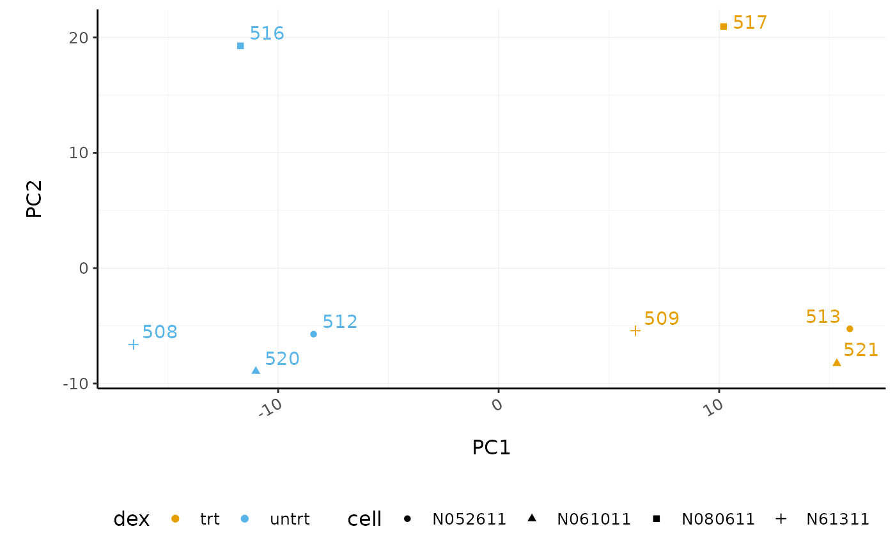
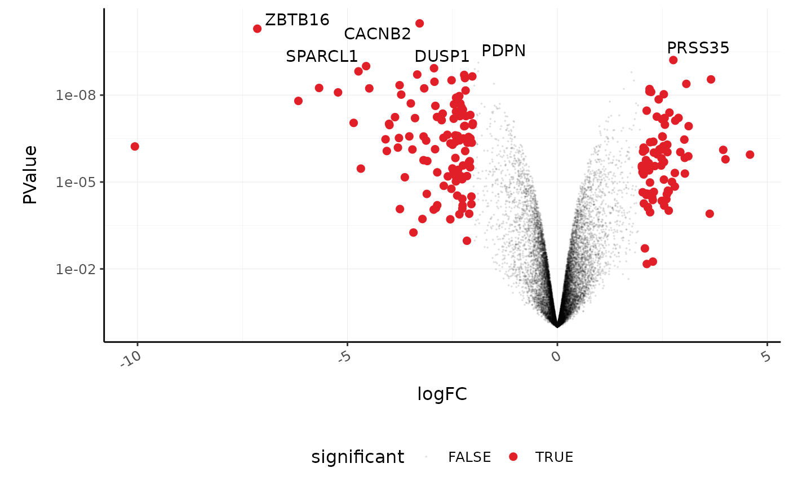
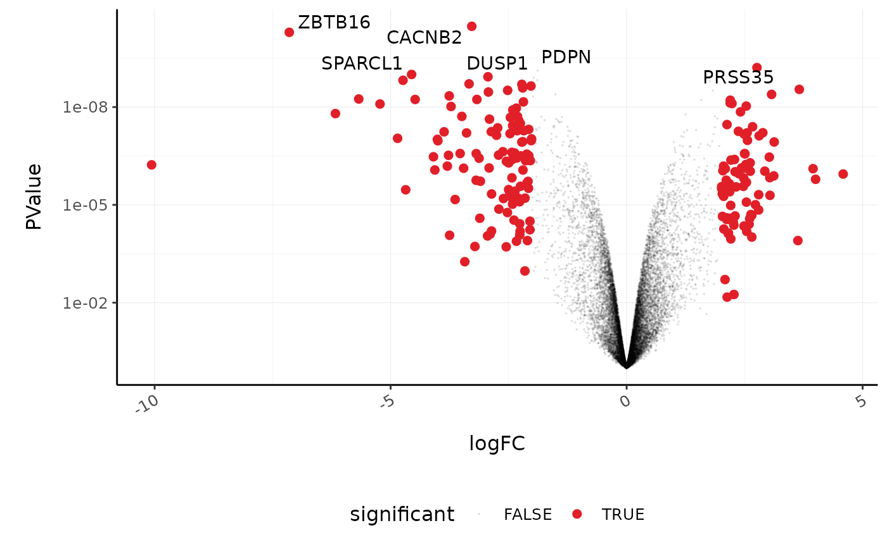
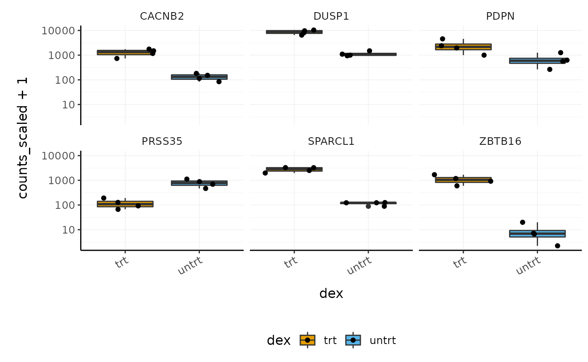
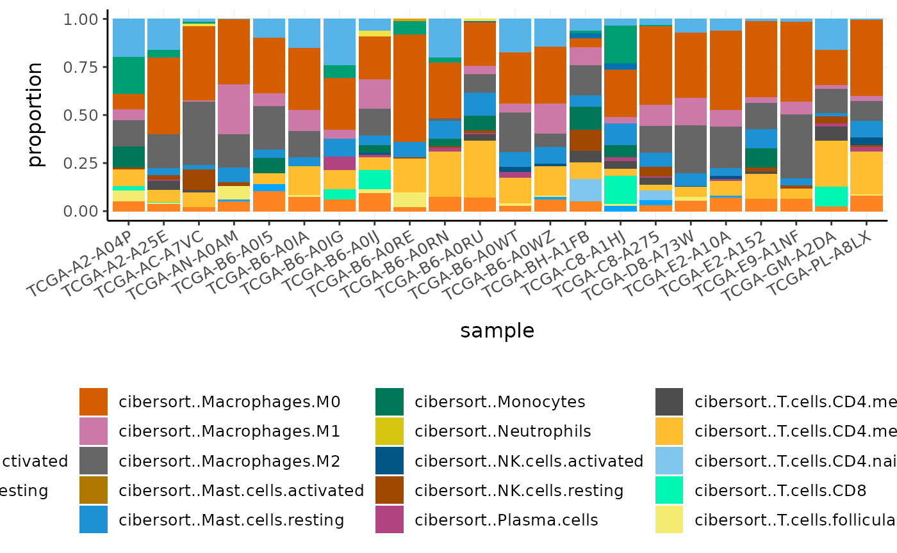
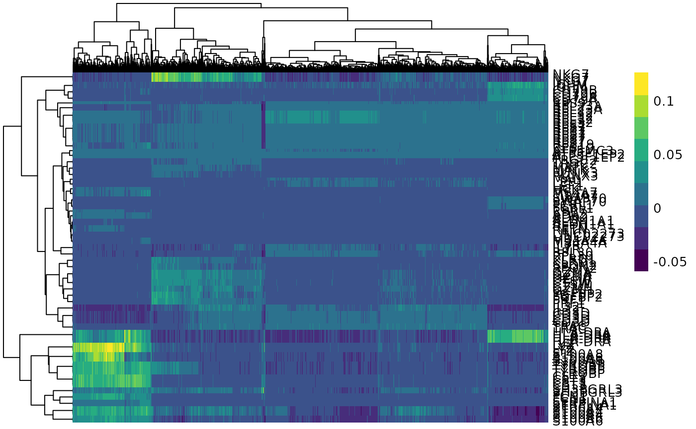

Introduction to Tidy Transcriptomics
Maria Doyle, Peter MacCallum Cancer Centre1
Stefano Mangiola, Walter and Eliza Hall Institute2
Source:vignettes/tidytranscriptomics.Rmd
tidytranscriptomics.RmdWorkshop introduction

Instructors
Dr. Stefano Mangiola is currently a Postdoctoral researcher in the laboratory of Prof. Tony Papenfuss at the Walter and Eliza Hall Institute in Melbourne, Australia. His background spans from biotechnology to bioinformatics and biostatistics. His research focuses on prostate and breast tumour microenvironment, the development of statistical models for the analysis of RNA sequencing data, and data analysis and visualisation interfaces.
Dr. Maria Doyle is the Application and Training Specialist for Research Computing at the Peter MacCallum Cancer Centre in Melbourne, Australia. She has a PhD in Molecular Biology and currently works in bioinformatics and data science education and training. She is passionate about supporting researchers, reproducible research, open source and tidy data.
Overview
This tutorial will present how to perform analysis of single-cell and bulk RNA sequencing data following the tidy data paradigm. The tidy data paradigm provides a standard way to organise data values within a dataset, where each variable is a column, each observation is a row, and data is manipulated using an easy-to-understand vocabulary. Most importantly, the data structure remains consistent across manipulation and analysis functions.
This can be achieved with the integration of packages present in the R CRAN and Bioconductor ecosystem, including tidyseurat, tidySingleCellExperiment, tidybulk, tidyHeatmap and tidyverse. These packages are part of the tidytranscriptomics suite that introduces a tidy approach to RNA sequencing data representation and analysis.
Pre-requisites
- Basic knowledge of RStudio
- Some familiarity with tidyverse syntax
- Some familiarity with bulk RNA-seq and single cell RNA-seq
Recommended Background Reading Introduction to R for Biologists
Time outline
This workshop is a 4 hour session.
Guide
| Activity | Time |
|---|---|
| Part 1 Bulk RNA-seq Core | |
| Hands-on Demos + Exercises | 90m |
| Differential gene expression | |
| Cell type composition analysis | |
| Break | 30m |
| Part 2 Single-cell RNA-seq | |
| Hands-on Demos + Exercises | 90m |
| Single-cell analysis | |
| Pseudobulk analysis | |
| Q&A | 30m |
| Total | 240m |
Format: Hands on demos, challenges plus Q&A
Interact: Zoom chat, Menti quiz for challenges
Workshop goals and objectives
In exploring and analysing RNA sequencing data, there are a number of key concepts, such as filtering, scaling, dimensionality reduction, hypothesis testing, clustering and visualisation, that need to be understood. These concepts can be intuitively explained to new users, however, (i) the use of a heterogeneous vocabulary and jargon by methodologies/algorithms/packages, (ii) the complexity of data wrangling, and (iii) the coding burden, impede effective learning of the statistics and biology underlying an informed RNA sequencing analysis.
The tidytranscriptomics approach to RNA sequencing data analysis abstracts out the coding-related complexity and provides tools that use an intuitive and jargon-free vocabulary, enabling focus on the statistical and biological challenges.
Google doc with all links
This Google doc has all the links you need for this workshop. As it contains logins to the Cloud servers, it will be accessible during the workshop only.
- Material
- Menti for Audience Questions and Challenges Quiz
- RStudio cloud logins
- Feedback survey
Audience Questions
First we have a few questions for you, the audience.
Please either open a tab in your browser or use your phone. Go to Menti (www.menti.com) and type the code given in the Google doc above.
Then please rate the following on a scale of 1-5 (1=no/none, 5=yes/a lot)
- I will code along and/or try out exercises during this workshop.
- I have experience with transcriptomic analyses
- I have experience with tidyverse
What is transcriptomics?
“The transcriptome is the set of all RNA transcripts, including coding and non-coding, in an individual or a population of cells”
Wikipedia

Why use transcriptomics?
- Genome (DNA) pretty stable
- Proteome (proteins) harder to measure
- Transcriptome (RNA) can measure changes in expression of thousands of coding and non-coding transcripts


Types of transcriptomic analyses
-
Differential expression
-
Cell type composition
- Alternative splicing
- Novel transcript discovery
- Fusions identification
- Variant analysis
Topics in bold we will see in this workshop


Tidy data and the tidyverse
This workshop demonstrates how to perform analysis of RNA sequencing data following the tidy data paradigm (Wickham and others 2014). The tidy data paradigm provides a standard way to organise data values within a dataset, where each variable is a column, each observation is a row, and data is manipulated using an easy-to-understand vocabulary. Most importantly, the data structure remains consistent across manipulation and analysis functions. For more information, see the R for Data Science chapter on tidy data here.
](../inst/vignettes/tidydata_1.jpg)
The tidyverse is a collection of packages that can be used to tidy, manipulate and visualise data. We’ll use many functions from the tidyverse in this workshop, such as filter, select, mutate, pivot_longer and ggplot.
Adapted from Getting Started with tidyverse in R
Getting started
Cloud
Easiest way to run this material. Only available during workshop. Many thanks to the Australian Research Data Commons (ARDC) for providing RStudio in the Australian Nectar Research Cloud and Andy Botting from ARDC for helping to set up.
- Login to one of the servers (e.g. https://rstudio2.tidytranscriptomics-workshop.cloud.edu.au/rstudio/) with one of the usernames and passwords from the spreadsheet provided at the workshop. Add your name into the spreadsheet beside the login you’re using.
- Open
tidytranscriptomics.Rmdinismb2021_tidytranscriptomcs/vignettesfolder
What is tidytranscriptomics?
tidybulk, tidySummarizedExperiment, tidySingleCellExperiment and tidyseurat are part of the tidytranscriptomics suite that introduces a tidy approach to RNA sequencing data representation and analysis. The roadmap for the development of the tidytranscriptomics packages is shown in the figure below.

Part 1 Bulk RNA sequencing with tidySummarizedExperiment and tidybulk

Acknowledgements
Some of the material in Part 1 was adapted from an R RNA sequencing workshop first run here. The use of the airway dataset was inspired by the DESeq2 vignette.
Introduction
Measuring gene expression on a genome-wide scale has become common practice over the last two decades or so, with microarrays predominantly used pre-2008. With the advent of next-generation sequencing technology in 2008, an increasing number of scientists use this technology to measure and understand changes in gene expression in often complex systems. As sequencing costs have decreased, using RNA sequencing to simultaneously measure the expression of tens of thousands of genes for multiple samples has never been easier. The cost of these experiments has now moved from generating the data to storing and analysing it.
There are many steps involved in analysing an RNA sequencing dataset. Sequenced reads are aligned to a reference genome, then the number of reads mapped to each gene can be counted. This results in a table of counts, which is what we perform statistical analyses on in R. While mapping and counting are important and necessary tasks, today, we will be starting from the count data and showing how differential expression analysis can be performed in a friendly way using the Bioconductor package, tidybulk.
First, let’s load all the packages we will need to analyse the data.
Note: you should load the tidybulk and tidySummarizedExperiment libraries after the tidyverse core packages for best integration.
# dataset
library(airway)
# tidyverse core packages
library(tibble)
library(dplyr)
library(tidyr)
library(readr)
library(stringr)
library(ggplot2)
library(purrr)
# tidyverse-friendly packages
library(plotly)
library(ggrepel)
library(GGally)
library(tidyHeatmap)
library(tidybulk)
# library(tidySummarizedExperiment) # we'll load this below to show what it can doPlot settings. Set the colours and theme we will use for our plots.
# Use colourblind-friendly colours
friendly_cols <- dittoSeq::dittoColors()
# Set theme
custom_theme <-
list(
scale_fill_manual(values = friendly_cols),
scale_color_manual(values = friendly_cols),
theme_bw() +
theme(
panel.border = element_blank(),
axis.line = element_line(),
panel.grid.major = element_line(size = 0.2),
panel.grid.minor = element_line(size = 0.1),
text = element_text(size = 12),
legend.position = "bottom",
strip.background = element_blank(),
axis.title.x = element_text(margin = margin(t = 10, r = 10, b = 10, l = 10)),
axis.title.y = element_text(margin = margin(t = 10, r = 10, b = 10, l = 10)),
axis.text.x = element_text(angle = 30, hjust = 1, vjust = 1)
)
)tidySummarizedExperiment
Here we will perform our analysis using the data from the airway package. The airway data comes from the paper by (Himes et al. 2014); and it includes 8 samples from human airway smooth muscle cells, from 4 cell lines. For each cell line treated (with dexamethasone) and untreated (negative control) a sample has undergone RNA sequencing and gene counts have been generated.
# load airway RNA sequencing data
data(airway)
# take a look
airway
#> class: RangedSummarizedExperiment
#> dim: 64102 8
#> metadata(1): ''
#> assays(1): counts
#> rownames(64102): ENSG00000000003 ENSG00000000005 ... LRG_98 LRG_99
#> rowData names(0):
#> colnames(8): SRR1039508 SRR1039509 ... SRR1039520 SRR1039521
#> colData names(9): SampleName cell ... Sample BioSampleThe data in the airway package is a Bioconductor SummarizedExperiment object. For more information see here.
The tidySummarizedExperiment package enables any SummarizedExperiment object to be displayed and manipulated according to tidy data principles, without affecting any SummarizedExperiment behaviour.
If we load the tidySummarizedExperiment package and then view the airway data it now displays as a tibble. A tibble is the tidyverse table format.
# load tidySummarizedExperiment package
library(tidySummarizedExperiment)
# take a look
airway
#> # A SummarizedExperiment-tibble abstraction: 512,816 × 13
#> [90m# Transcripts=64102 | Samples=8 | Assays=counts[39m
#> feature sample counts SampleName cell dex albut Run avgLength Experiment
#> <chr> <chr> <int> <fct> <fct> <fct> <fct> <fct> <int> <fct>
#> 1 ENSG00… SRR10… 679 GSM1275862 N613… untrt untrt SRR1… 126 SRX384345
#> 2 ENSG00… SRR10… 0 GSM1275862 N613… untrt untrt SRR1… 126 SRX384345
#> 3 ENSG00… SRR10… 467 GSM1275862 N613… untrt untrt SRR1… 126 SRX384345
#> 4 ENSG00… SRR10… 260 GSM1275862 N613… untrt untrt SRR1… 126 SRX384345
#> 5 ENSG00… SRR10… 60 GSM1275862 N613… untrt untrt SRR1… 126 SRX384345
#> 6 ENSG00… SRR10… 0 GSM1275862 N613… untrt untrt SRR1… 126 SRX384345
#> 7 ENSG00… SRR10… 3251 GSM1275862 N613… untrt untrt SRR1… 126 SRX384345
#> 8 ENSG00… SRR10… 1433 GSM1275862 N613… untrt untrt SRR1… 126 SRX384345
#> 9 ENSG00… SRR10… 519 GSM1275862 N613… untrt untrt SRR1… 126 SRX384345
#> 10 ENSG00… SRR10… 394 GSM1275862 N613… untrt untrt SRR1… 126 SRX384345
#> # … with 40 more rows, and 3 more variables: Sample <fct>, BioSample <fct>,
#> # coordinate <list>Now we can more easily see the data. The airway object contains information about genes and samples, the first column has the Ensembl gene identifier, the second column has the sample identifier and the third column has the gene transcription abundance. The abundance is the number of reads aligning to the gene in each experimental sample. The remaining columns include sample information. The dex column tells us whether the samples are treated or untreated and the cell column tells us what cell line they are from.
We can still interact with the tidy SummarizedExperiment object using commands for SummarizedExperiment objects.
assays(airway)
#> List of length 1
#> names(1): countsTidyverse commands
And now we can also use tidyverse commands, such as filter, select, group_by, summarise and mutate to explore the tidy SummarizedExperiment object. Some examples are shown below and more can be seen at the tidySummarizedExperiment website here. We can also use the tidyverse pipe %>%. This ‘pipes’ the output from the command on the left into the command on the right/below. Using the pipe is not essential but it reduces the amount of code we need to write when we have multiple steps. It also can make the steps clearer and easier to see. For more details on the pipe see here.
We can use filter to choose rows, for example, to see just the rows for the treated samples.
airway %>% filter(dex == "trt")
#> # A SummarizedExperiment-tibble abstraction: 256,408 × 13
#> [90m# Transcripts=64102 | Samples=4 | Assays=counts[39m
#> feature sample counts SampleName cell dex albut Run avgLength Experiment
#> <chr> <chr> <int> <fct> <fct> <fct> <fct> <fct> <int> <fct>
#> 1 ENSG00… SRR10… 448 GSM1275863 N613… trt untrt SRR1… 126 SRX384346
#> 2 ENSG00… SRR10… 0 GSM1275863 N613… trt untrt SRR1… 126 SRX384346
#> 3 ENSG00… SRR10… 515 GSM1275863 N613… trt untrt SRR1… 126 SRX384346
#> 4 ENSG00… SRR10… 211 GSM1275863 N613… trt untrt SRR1… 126 SRX384346
#> 5 ENSG00… SRR10… 55 GSM1275863 N613… trt untrt SRR1… 126 SRX384346
#> 6 ENSG00… SRR10… 0 GSM1275863 N613… trt untrt SRR1… 126 SRX384346
#> 7 ENSG00… SRR10… 3679 GSM1275863 N613… trt untrt SRR1… 126 SRX384346
#> 8 ENSG00… SRR10… 1062 GSM1275863 N613… trt untrt SRR1… 126 SRX384346
#> 9 ENSG00… SRR10… 380 GSM1275863 N613… trt untrt SRR1… 126 SRX384346
#> 10 ENSG00… SRR10… 236 GSM1275863 N613… trt untrt SRR1… 126 SRX384346
#> # … with 40 more rows, and 3 more variables: Sample <fct>, BioSample <fct>,
#> # coordinate <list>We can use select to choose columns, for example, to see the sample, cell line and treatment columns.
airway %>% select(sample, cell, dex)
#> tidySummarizedExperiment says: Key columns are missing. A data frame is returned for independent data analysis.
#> # A tibble: 512,816 × 3
#> sample cell dex
#> <chr> <fct> <fct>
#> 1 SRR1039508 N61311 untrt
#> 2 SRR1039508 N61311 untrt
#> 3 SRR1039508 N61311 untrt
#> 4 SRR1039508 N61311 untrt
#> 5 SRR1039508 N61311 untrt
#> 6 SRR1039508 N61311 untrt
#> 7 SRR1039508 N61311 untrt
#> 8 SRR1039508 N61311 untrt
#> 9 SRR1039508 N61311 untrt
#> 10 SRR1039508 N61311 untrt
#> # … with 512,806 more rowsWe can combine group_by and summarise to calculate the total counts for each sample.
airway %>%
group_by(sample) %>%
summarise(total_counts=sum(counts))
#> tidySummarizedExperiment says: A data frame is returned for independent data analysis.
#> # A tibble: 8 × 2
#> sample total_counts
#> <chr> <int>
#> 1 SRR1039508 20637971
#> 2 SRR1039509 18809481
#> 3 SRR1039512 25348649
#> 4 SRR1039513 15163415
#> 5 SRR1039516 24448408
#> 6 SRR1039517 30818215
#> 7 SRR1039520 19126151
#> 8 SRR1039521 21164133We can use mutate to create a column. For example, we could create a new sample_name column that contains shorter sample names. We can remove the SRR1039 prefix that’s present in all of the samples, as shorter names can fit better in some of the plots we will create. We can use mutate together with str_replace to remove the SRR1039 string from the sample column.
airway %>%
mutate(sample_name=str_remove(sample, "SRR1039")) %>%
# select columns to view
select(sample, sample_name)
#> tidySummarizedExperiment says: Key columns are missing. A data frame is returned for independent data analysis.
#> # A tibble: 512,816 × 2
#> sample sample_name
#> <chr> <chr>
#> 1 SRR1039508 508
#> 2 SRR1039508 508
#> 3 SRR1039508 508
#> 4 SRR1039508 508
#> 5 SRR1039508 508
#> 6 SRR1039508 508
#> 7 SRR1039508 508
#> 8 SRR1039508 508
#> 9 SRR1039508 508
#> 10 SRR1039508 508
#> # … with 512,806 more rowsSetting up the data
We’ll set up the airway data for our RNA sequencing analysis. We’ll create a column with shorter sample names and a column with gene symbols. We can get the gene symbols for these Ensembl gene ids using the Bioconductor annotation package for human, org.Hs.eg.db.
# setup data workflow
counts <-
airway %>%
mutate(sample_name = str_remove(sample, "SRR1039")) %>%
mutate(symbol = AnnotationDbi::mapIds(org.Hs.eg.db::org.Hs.eg.db,
keys = feature,
keytype = "ENSEMBL",
column = "SYMBOL",
multiVals = "first"
))
#>
#> 'select()' returned 1:many mapping between keys and columns
# take a look
counts
#> # A SummarizedExperiment-tibble abstraction: 512,816 × 15
#> [90m# Transcripts=64102 | Samples=8 | Assays=counts[39m
#> feature sample counts SampleName cell dex albut Run avgLength Experiment
#> <chr> <chr> <int> <fct> <fct> <fct> <fct> <fct> <int> <fct>
#> 1 ENSG00… SRR10… 679 GSM1275862 N613… untrt untrt SRR1… 126 SRX384345
#> 2 ENSG00… SRR10… 0 GSM1275862 N613… untrt untrt SRR1… 126 SRX384345
#> 3 ENSG00… SRR10… 467 GSM1275862 N613… untrt untrt SRR1… 126 SRX384345
#> 4 ENSG00… SRR10… 260 GSM1275862 N613… untrt untrt SRR1… 126 SRX384345
#> 5 ENSG00… SRR10… 60 GSM1275862 N613… untrt untrt SRR1… 126 SRX384345
#> 6 ENSG00… SRR10… 0 GSM1275862 N613… untrt untrt SRR1… 126 SRX384345
#> 7 ENSG00… SRR10… 3251 GSM1275862 N613… untrt untrt SRR1… 126 SRX384345
#> 8 ENSG00… SRR10… 1433 GSM1275862 N613… untrt untrt SRR1… 126 SRX384345
#> 9 ENSG00… SRR10… 519 GSM1275862 N613… untrt untrt SRR1… 126 SRX384345
#> 10 ENSG00… SRR10… 394 GSM1275862 N613… untrt untrt SRR1… 126 SRX384345
#> # … with 40 more rows, and 5 more variables: Sample <fct>, BioSample <fct>,
#> # sample_name <chr>, symbol <chr>, coordinate <list>Filtering lowly transcribed genes
Genes with very low counts across all libraries provide little evidence for differential expression and they can interfere with some of the statistical approximations that are used later in the pipeline. They also add to the multiple testing burden when estimating false discovery rates, reducing the power to detect differentially expressed genes. These genes should be filtered out prior to further analysis.
We can perform the filtering using tidybulk keep_abundant or identify_abundant. These functions can use the edgeR filterByExpr function described in (Law et al. 2016) to automatically identify the genes with adequate abundance for differential expression testing. By default, this will keep genes with ~10 counts in a minimum number of samples, the number of the samples in the smallest group. In this dataset, the smallest group size is four (as we have four dex-treated samples versus four untreated). Alternatively, we could use identify_abundant to identify which genes are abundant or not (TRUE/FALSE), rather than just keeping the abundant ones.
# Filtering counts
counts_filtered <- counts %>% keep_abundant(factor_of_interest = dex)
# take a look
counts_filtered
#> # A SummarizedExperiment-tibble abstraction: 127,408 × 16
#> [90m# Transcripts=15926 | Samples=8 | Assays=counts[39m
#> feature sample counts SampleName cell dex albut Run avgLength Experiment
#> <chr> <chr> <int> <fct> <fct> <fct> <fct> <fct> <int> <fct>
#> 1 ENSG00… SRR10… 679 GSM1275862 N613… untrt untrt SRR1… 126 SRX384345
#> 2 ENSG00… SRR10… 467 GSM1275862 N613… untrt untrt SRR1… 126 SRX384345
#> 3 ENSG00… SRR10… 260 GSM1275862 N613… untrt untrt SRR1… 126 SRX384345
#> 4 ENSG00… SRR10… 60 GSM1275862 N613… untrt untrt SRR1… 126 SRX384345
#> 5 ENSG00… SRR10… 3251 GSM1275862 N613… untrt untrt SRR1… 126 SRX384345
#> 6 ENSG00… SRR10… 1433 GSM1275862 N613… untrt untrt SRR1… 126 SRX384345
#> 7 ENSG00… SRR10… 519 GSM1275862 N613… untrt untrt SRR1… 126 SRX384345
#> 8 ENSG00… SRR10… 394 GSM1275862 N613… untrt untrt SRR1… 126 SRX384345
#> 9 ENSG00… SRR10… 172 GSM1275862 N613… untrt untrt SRR1… 126 SRX384345
#> 10 ENSG00… SRR10… 2112 GSM1275862 N613… untrt untrt SRR1… 126 SRX384345
#> # … with 40 more rows, and 6 more variables: Sample <fct>, BioSample <fct>,
#> # sample_name <chr>, symbol <chr>, .abundant <lgl>, coordinate <list>After running keep_abundant we have a column called .abundant containing TRUE (identify_abundant would have TRUE/FALSE).
Scaling counts to normalise
Scaling of counts (normalisation) is performed to eliminate uninteresting differences between samples due to sequencing depth or composition. A more detailed explanation can be found here. In the tidybulk package, the function scale_abundance generates scaled counts, with scaling factors calculated on abundant (filtered) transcripts and applied to all transcripts. We can choose from different normalisation methods. Here we will use the default edgeR’s trimmed mean of M values (TMM), (Robinson and Oshlack 2010). TMM normalisation (and most scaling normalisation methods) scale relative to one sample.
# Scaling counts
counts_scaled <- counts_filtered %>% scale_abundance()
# take a look
counts_scaled
#> # A SummarizedExperiment-tibble abstraction: 127,408 × 19
#> [90m# Transcripts=15926 | Samples=8 | Assays=counts, counts_scaled[39m
#> feature sample counts counts_scaled SampleName cell dex albut Run
#> <chr> <chr> <int> <dbl> <fct> <fct> <fct> <fct> <fct>
#> 1 ENSG00… SRR10… 679 961. GSM1275862 N613… untrt untrt SRR1…
#> 2 ENSG00… SRR10… 467 661. GSM1275862 N613… untrt untrt SRR1…
#> 3 ENSG00… SRR10… 260 368. GSM1275862 N613… untrt untrt SRR1…
#> 4 ENSG00… SRR10… 60 84.9 GSM1275862 N613… untrt untrt SRR1…
#> 5 ENSG00… SRR10… 3251 4601. GSM1275862 N613… untrt untrt SRR1…
#> 6 ENSG00… SRR10… 1433 2028. GSM1275862 N613… untrt untrt SRR1…
#> 7 ENSG00… SRR10… 519 734. GSM1275862 N613… untrt untrt SRR1…
#> 8 ENSG00… SRR10… 394 558. GSM1275862 N613… untrt untrt SRR1…
#> 9 ENSG00… SRR10… 172 243. GSM1275862 N613… untrt untrt SRR1…
#> 10 ENSG00… SRR10… 2112 2989. GSM1275862 N613… untrt untrt SRR1…
#> # … with 40 more rows, and 10 more variables: avgLength <int>,
#> # Experiment <fct>, Sample <fct>, BioSample <fct>, sample_name <chr>,
#> # TMM <dbl>, multiplier <dbl>, symbol <chr>, .abundant <lgl>,
#> # coordinate <list>After we run, we should see some columns have been added at the end. The counts_scaled column contains the scaled counts.
We can visualise the difference in abundance densities before and after scaling. As tidybulk output is compatible with tidyverse, we can simply pipe it into standard tidyverse functions such as filter, pivot_longer and ggplot. We can also take advantage of ggplot’s facet_wrap to easily create multiple plots.
counts_scaled %>%
# Reshaping
pivot_longer(cols = c("counts", "counts_scaled"), names_to = "source", values_to = "abundance") %>%
# Plotting
ggplot(aes(x = abundance + 1, color = sample_name)) +
geom_density() +
facet_wrap(~source) +
scale_x_log10() +
custom_theme
#> tidySummarizedExperiment says: A data frame is returned for independent data analysis.
In this dataset, the distributions of the counts are not very different to each other before scaling, but scaling does make the distributions more similar. If we saw a sample with a very different distribution, we may need to investigate it.
As tidybulk smoothly integrates with ggplot2 and other tidyverse packages it can save on typing and make plots easier to generate. Compare the code for creating density plots with tidybulk versus standard base R below (standard code adapted from (Law et al. 2016)).
tidybulk
# tidybulk
airway %>%
keep_abundant(factor_of_interest = dex) %>%
scale_abundance() %>%
pivot_longer(cols = c("counts", "counts_scaled"), names_to = "source", values_to = "abundance") %>%
ggplot(aes(x = abundance + 1, color = sample)) +
geom_density() +
facet_wrap(~source) +
scale_x_log10() +
custom_themebase R using edgeR
# Example code, no need to run
# Prepare data set
library(edgeR)
dgList <- SE2DGEList(airway)
group <- factor(dgList$samples$dex)
keep.exprs <- filterByExpr(dgList, group = group)
dgList <- dgList[keep.exprs, , keep.lib.sizes = FALSE]
nsamples <- ncol(dgList)
logcounts <- log2(dgList$counts)
# Setup graphics
col <- RColorBrewer::brewer.pal(nsamples, "Paired")
par(mfrow = c(1, 2))
# Plot raw counts
plot(density(logcounts[, 1]), col = col[1], lwd = 2, ylim = c(0, 0.26), las = 2, main = "", xlab = "")
title(main = "Counts")
for (i in 2:nsamples) {
den <- density(logcounts[, i])
lines(den$x, den$y, col = col[i], lwd = 2)
}
legend("topright", legend = dgList$samples$Run, text.col = col, bty = "n")
# Plot scaled counts
dgList_norm <- calcNormFactors(dgList)
lcpm_n <- cpm(dgList_norm, log = TRUE)
plot(density(lcpm_n[, 1]), col = col[1], lwd = 2, ylim = c(0, 0.26), las = 2, main = "", xlab = "")
title("Counts scaled")
for (i in 2:nsamples) {
den <- density(lcpm_n[, i])
lines(den$x, den$y, col = col[i], lwd = 2)
}
legend("topright", legend = dgList_norm$samples$Run, text.col = col, bty = "n")Exploratory analyses
Dimensionality reduction
By far, one of the most important plots we make when we analyse RNA sequencing data are principal-component analysis (PCA) or multi-dimensional scaling (MDS) plots. We reduce the dimensions of the data to identify the greatest sources of variation in the data. A principal components analysis is an example of an unsupervised analysis, where we don’t need to specify the groups. If your experiment is well controlled and has worked well, what we hope to see is that the greatest sources of variation in the data are the treatments/groups we are interested in. It is also an incredibly useful tool for quality control and checking for outliers. We can use the reduce_dimensions function to calculate the dimensions.
# Get principal components
counts_scal_PCA <-
counts_scaled %>%
reduce_dimensions(method = "PCA")
#> Getting the 500 most variable genes
#> Fraction of variance explained by the selected principal components
#> # A tibble: 2 × 2
#> `Fraction of variance` PC
#> <dbl> <int>
#> 1 0.353 1
#> 2 0.312 2
#> tidybulk says: to access the raw results do `attr(..., "internals")$PCA`Challenge: What fraction of variance is explained by PC3?
Select one of the multiple choice options in www.menti.com (code in Google doc).The Principal component (PC) information is joined as columns to the counts object.
# Take a look
counts_scal_PCA
#> # A SummarizedExperiment-tibble abstraction: 127,408 × 21
#> [90m# Transcripts=15926 | Samples=8 | Assays=counts, counts_scaled[39m
#> feature sample counts counts_scaled SampleName cell dex albut Run
#> <chr> <chr> <int> <dbl> <fct> <fct> <fct> <fct> <fct>
#> 1 ENSG00… SRR10… 679 961. GSM1275862 N613… untrt untrt SRR1…
#> 2 ENSG00… SRR10… 467 661. GSM1275862 N613… untrt untrt SRR1…
#> 3 ENSG00… SRR10… 260 368. GSM1275862 N613… untrt untrt SRR1…
#> 4 ENSG00… SRR10… 60 84.9 GSM1275862 N613… untrt untrt SRR1…
#> 5 ENSG00… SRR10… 3251 4601. GSM1275862 N613… untrt untrt SRR1…
#> 6 ENSG00… SRR10… 1433 2028. GSM1275862 N613… untrt untrt SRR1…
#> 7 ENSG00… SRR10… 519 734. GSM1275862 N613… untrt untrt SRR1…
#> 8 ENSG00… SRR10… 394 558. GSM1275862 N613… untrt untrt SRR1…
#> 9 ENSG00… SRR10… 172 243. GSM1275862 N613… untrt untrt SRR1…
#> 10 ENSG00… SRR10… 2112 2989. GSM1275862 N613… untrt untrt SRR1…
#> # … with 40 more rows, and 12 more variables: avgLength <int>,
#> # Experiment <fct>, Sample <fct>, BioSample <fct>, sample_name <chr>,
#> # TMM <dbl>, multiplier <dbl>, PC1 <dbl>, PC2 <dbl>, symbol <chr>,
#> # .abundant <lgl>, coordinate <list>For plotting, we can select just the sample-wise information with pivot_sample.
# take a look
counts_scal_PCA %>% pivot_sample()
#> # A tibble: 8 × 15
#> sample SampleName cell dex albut Run avgLength Experiment Sample
#> <chr> <fct> <fct> <fct> <fct> <fct> <int> <fct> <fct>
#> 1 SRR10395… GSM1275862 N61311 untrt untrt SRR1039… 126 SRX384345 SRS508…
#> 2 SRR10395… GSM1275863 N61311 trt untrt SRR1039… 126 SRX384346 SRS508…
#> 3 SRR10395… GSM1275866 N052611 untrt untrt SRR1039… 126 SRX384349 SRS508…
#> 4 SRR10395… GSM1275867 N052611 trt untrt SRR1039… 87 SRX384350 SRS508…
#> 5 SRR10395… GSM1275870 N080611 untrt untrt SRR1039… 120 SRX384353 SRS508…
#> 6 SRR10395… GSM1275871 N080611 trt untrt SRR1039… 126 SRX384354 SRS508…
#> 7 SRR10395… GSM1275874 N061011 untrt untrt SRR1039… 101 SRX384357 SRS508…
#> 8 SRR10395… GSM1275875 N061011 trt untrt SRR1039… 98 SRX384358 SRS508…
#> # … with 6 more variables: BioSample <fct>, sample_name <chr>, TMM <dbl>,
#> # multiplier <dbl>, PC1 <dbl>, PC2 <dbl>We can now plot the reduced dimensions.
# PCA plot
counts_scal_PCA %>%
pivot_sample() %>%
ggplot(aes(x = PC1, y = PC2, colour = dex, shape = cell)) +
geom_point() +
geom_text_repel(aes(label = sample_name), show.legend = FALSE) +
custom_theme
The samples group by treatment on PC1 which is what we hope to see. PC2 separates the N080611 cell line from the other samples, indicating a greater difference between that cell line and the others.
Hierarchical clustering with heatmaps
An alternative to principal component analysis for examining relationships between samples is using hierarchical clustering. Heatmaps are a nice visualisation to examine hierarchical clustering of your samples. tidybulk has a simple function we can use, keep_variable, to extract the most variable genes which we can then plot with tidyHeatmap.
counts_scal_PCA %>%
# extract 500 most variable genes
keep_variable(.abundance = counts_scaled, top = 500) %>%
as_tibble() %>%
# create heatmap
heatmap(
.column = sample_name,
.row = feature,
.value = counts_scaled,
transform = log1p
) %>%
add_tile(dex) %>%
add_tile(cell)
#> Getting the 500 most variable genes
#> tidyHeatmap says: (once per session) from release 1.2.3 the grouping labels have white background by default. To add color for one-ay grouping specify palette_grouping = list(c("red", "blue"))
#> Warning in add_annotation(., !!.column, type = "tile", palette_discrete
#> = .data@data %>% : tidyHeatmap says: nested/list column are present in your data
#> frame and have been dropped as their unicity cannot be identified by dplyr.
#> Warning in add_annotation(., !!.column, type = "tile", palette_discrete
#> = .data@data %>% : tidyHeatmap says: nested/list column are present in your data
#> frame and have been dropped as their unicity cannot be identified by dplyr.
In the heatmap, we can see the samples cluster into two groups, treated and untreated, for three of the cell lines, and the cell line (N080611) again is further away from the others.
Tidybulk enables a simplified way of generating a clustered heatmap of variable genes. Compare the code below for tidybulk versus a base R method.
base R using edgeR
# Example code, no need to run
library(edgeR)
dgList <- SE2DGEList(airway)
group <- factor(dgList$samples$dex)
keep.exprs <- filterByExpr(dgList, group = group)
dgList <- dgList[keep.exprs, , keep.lib.sizes = FALSE]
dgList <- calcNormFactors(dgList)
logcounts <- cpm(dgList, log = TRUE)
var_genes <- apply(logcounts, 1, var)
select_var <- names(sort(var_genes, decreasing = TRUE))[1:500]
highly_variable_lcpm <- logcounts[select_var, ]
colours <- c("#440154FF", "#21908CFF", "#fefada")
col.group <- c("red", "grey")[group]
gplots::heatmap.2(highly_variable_lcpm, col = colours, trace = "none", ColSideColors = col.group, scale = "row")Differential expression
tidybulk integrates several popular methods for differential transcript abundance testing: the edgeR quasi-likelihood (Chen, Lun, and Smyth 2016) (tidybulk default method), edgeR likelihood ratio (McCarthy, Chen, and Smyth 2012), limma-voom (Law et al. 2014) and DESeq2 (Love, Huber, and Anders 2014). A common question researchers have is which method to choose. With tidybulk, we can easily run multiple methods and compare.
We give test_differential_abundance our tidybulk counts object and a formula, specifying the column that contains our groups to be compared. If all our samples were from the same cell line, and there were no additional factors contributing variance, such as batch differences, we could use the formula ~ dex. However, each treated and untreated sample is from a different cell line, so we add the cell line as an additional factor ~ dex + cell.
de_all <-
counts_scal_PCA %>%
# edgeR QLT
test_differential_abundance(
~ dex + cell,
method = "edgeR_quasi_likelihood",
prefix = "edgerQLT_"
) %>%
# edgeR LRT
test_differential_abundance(
~ dex + cell,
method = "edgeR_likelihood_ratio",
prefix = "edgerLR_"
) %>%
# limma-voom
test_differential_abundance(
~ dex + cell,
method = "limma_voom",
prefix = "voom_"
) %>%
# DESeq2
test_differential_abundance(
~ dex + cell,
method = "deseq2",
prefix = "deseq2_"
)
# take a look
de_all
#> # A SummarizedExperiment-tibble abstraction: 127,408 × 43
#> [90m# Transcripts=15926 | Samples=8 | Assays=counts, counts_scaled[39m
#> feature sample counts counts_scaled SampleName cell dex albut Run
#> <chr> <chr> <int> <dbl> <fct> <fct> <fct> <fct> <fct>
#> 1 ENSG00… SRR10… 679 961. GSM1275862 N613… untrt untrt SRR1…
#> 2 ENSG00… SRR10… 467 661. GSM1275862 N613… untrt untrt SRR1…
#> 3 ENSG00… SRR10… 260 368. GSM1275862 N613… untrt untrt SRR1…
#> 4 ENSG00… SRR10… 60 84.9 GSM1275862 N613… untrt untrt SRR1…
#> 5 ENSG00… SRR10… 3251 4601. GSM1275862 N613… untrt untrt SRR1…
#> 6 ENSG00… SRR10… 1433 2028. GSM1275862 N613… untrt untrt SRR1…
#> 7 ENSG00… SRR10… 519 734. GSM1275862 N613… untrt untrt SRR1…
#> 8 ENSG00… SRR10… 394 558. GSM1275862 N613… untrt untrt SRR1…
#> 9 ENSG00… SRR10… 172 243. GSM1275862 N613… untrt untrt SRR1…
#> 10 ENSG00… SRR10… 2112 2989. GSM1275862 N613… untrt untrt SRR1…
#> # … with 40 more rows, and 34 more variables: avgLength <int>,
#> # Experiment <fct>, Sample <fct>, BioSample <fct>, sample_name <chr>,
#> # TMM <dbl>, multiplier <dbl>, PC1 <dbl>, PC2 <dbl>, symbol <chr>,
#> # .abundant <lgl>, edgerQLT_logFC <dbl>, edgerQLT_logCPM <dbl>,
#> # edgerQLT_F <dbl>, edgerQLT_PValue <dbl>, edgerQLT_FDR <dbl>,
#> # edgerLR_logFC <dbl>, edgerLR_logCPM <dbl>, edgerLR_LR <dbl>,
#> # edgerLR_PValue <dbl>, edgerLR_FDR <dbl>, voom_logFC <dbl>,
#> # voom_AveExpr <dbl>, voom_t <dbl>, voom_P.Value <dbl>, voom_adj.P.Val <dbl>,
#> # voom_B <dbl>, deseq2_baseMean <dbl>, deseq2_log2FoldChange <dbl>,
#> # deseq2_lfcSE <dbl>, deseq2_stat <dbl>, deseq2_pvalue <dbl>,
#> # deseq2_padj <dbl>, coordinate <list>This outputs the columns from each method such as log-fold change (logFC), false-discovery rate (FDR) and probability value (p-value). logFC is log2(treated/untreated).
Comparison of methods
We can visually compare the significance for all methods. We will notice that there is some difference between the methods.
de_all %>%
pivot_transcript() %>%
select(edgerQLT_PValue, edgerLR_PValue, voom_P.Value, deseq2_pvalue, feature) %>%
ggpairs(1:4)
Challenge: Which method detects the largest no. of differentially abundant transcripts, p value adjusted for multiple testing < 0.05 (FDR, adj.P.Val, padj)?
Select one of the multiple choice options in www.menti.com (code in Google doc).Single method
If we just wanted to run one differential testing method we could do that. The default method is edgeR quasi-likelihood.
counts_de <- counts_scal_PCA %>%
test_differential_abundance(~ dex + cell)
#> =====================================
#> tidybulk says: All testing methods use raw counts, irrespective of if scale_abundance
#> or adjust_abundance have been calculated. Therefore, it is essential to add covariates
#> such as batch effects (if applicable) in the formula.
#> =====================================
#> tidybulk says: The design column names are "(Intercept), dexuntrt, cellN061011, cellN080611, cellN61311"
#> tidybulk says: to access the raw results (fitted GLM) do `attr(..., "internals")$edgeR_quasi_likelihood`Tidybulk enables a simplified way of performing an RNA sequencing differential expression analysis (with the benefit of smoothly integrating with ggplot2 and other tidyverse packages). Compare the code for a tidybulk edgeR analysis versus standard edgeR below.
standard edgeR
# Example code, no need to run
library(edgeR)
dgList <- SE2DGEList(airway)
group <- factor(dgList$samples$dex)
keep.exprs <- filterByExpr(dgList, group = group)
dgList <- dgList[keep.exprs, , keep.lib.sizes = FALSE]
dgList <- calcNormFactors(dgList)
cell <- factor(dgList$samples$cell)
design <- model.matrix(~ group + cell)
dgList <- estimateDisp(dgList, design)
fit <- glmQLFit(dgList, design)
qlf <- glmQLFTest(fit, coef=2)Plots after differential expression
Volcano plots
Volcano plots are a useful genome-wide tool for checking that the analysis looks good. Volcano plots enable us to visualise the significance of change (p-value) versus the fold change (logFC). Highly significant genes are towards the top of the plot. We can also colour significant genes, e.g. genes with false-discovery rate < 0.05. To decide which genes are differentially expressed, we usually take a cut-off of 0.05 on the FDR (or adjusted P-value), NOT the raw p-value. This is because we are testing many genes (multiple testing), and the chances of finding differentially expressed genes are very high when you do that many tests. Hence we need to control the false discovery rate, the adjusted p-value column in the results table. That is, if 100 genes are significant at a 5% false discovery rate, we are willing to accept that 5 will be false positives.
# volcano plot, minimal
counts_de %>%
ggplot(aes(x = logFC, y = PValue, colour = FDR < 0.05)) +
geom_point() +
scale_y_continuous(trans = "log10_reverse") +
custom_theme
We’ll extract the symbols for a few top genes (by P value) to use in a more informative volcano plot, integrating some of the packages in tidyverse.
topgenes_symbols <-
counts_de %>%
pivot_transcript() %>%
arrange(PValue) %>%
head(6) %>%
pull(symbol)
topgenes_symbols
#> [1] "CACNB2" "ZBTB16" "PRSS35" "PDPN" "SPARCL1" "DUSP1"
counts_de %>%
pivot_transcript() %>%
# Subset data
mutate(significant = FDR < 0.05 & abs(logFC) >= 2) %>%
mutate(symbol = ifelse(symbol %in% topgenes_symbols, as.character(symbol), "")) %>%
# Plot
ggplot(aes(x = logFC, y = PValue, label = symbol)) +
geom_point(aes(color = significant, size = significant, alpha = significant)) +
geom_text_repel() +
# Custom scales
custom_theme +
scale_y_continuous(trans = "log10_reverse") +
scale_color_manual(values = c("black", "#e11f28")) +
scale_size_discrete(range = c(0, 2))
#> Scale for 'colour' is already present. Adding another scale for 'colour',
#> which will replace the existing scale.
Stripcharts
Before following up on the differentially expressed genes with further lab work, it is also recommended to have a look at the expression levels of the individual samples for the genes of interest. We can use stripcharts to do this. These will help show if expression is consistent amongst replicates in the groups.
With stripcharts we can see if replicates tend to group together and how the expression compares to the other groups. We’ll also add a box plot to show the distribution. Tidyverse faceting makes it easy to create a plot for each gene.
strip_chart <-
counts_scaled %>%
# extract counts for top differentially expressed genes
filter(symbol %in% topgenes_symbols) %>%
# make faceted stripchart
ggplot(aes(x = dex, y = counts_scaled + 1, fill = dex, label = sample)) +
geom_boxplot() +
geom_jitter() +
facet_wrap(~symbol) +
scale_y_log10() +
custom_theme
strip_chart
Interactive Plots
A really nice feature of using tidyverse and ggplot2 is that we can make interactive plots quite easily using the plotly package. This can be very useful for exploring what genes or samples are in the plots. We can make interactive plots directly from our ggplot2 object (strip_chart). Having label in the aes is useful to visualise the identifier of the data point (here the sample id) or other variables when we hover over the plot.
We can also specify which parameters from the aes we want to show up when we hover over the plot with tooltip.
Automatic bibliography
Tidybulk provides a handy function called get_bibliography that keeps track of the references for the methods used in your tidybulk workflow. The references are in BibTeX format and can be imported into your reference manager.
get_bibliography(counts_de)
#> @Article{tidybulk,
#> title = {tidybulk: an R tidy framework for modular transcriptomic data analysis},
#> author = {Stefano Mangiola and Ramyar Molania and Ruining Dong and Maria A. Doyle & Anthony T. Papenfuss},
#> journal = {Genome Biology},
#> year = {2021},
#> volume = {22},
#> number = {42},
#> url = {https://genomebiology.biomedcentral.com/articles/10.1186/s13059-020-02233-7},
#> }
#> @article{wickham2019welcome,
#> title={Welcome to the Tidyverse},
#> author={Wickham, Hadley and Averick, Mara and Bryan, Jennifer and Chang, Winston and McGowan, Lucy D'Agostino and Francois, Romain and Grolemund, Garrett and Hayes, Alex and Henry, Lionel and Hester, Jim and others},
#> journal={Journal of Open Source Software},
#> volume={4},
#> number={43},
#> pages={1686},
#> year={2019}
#> }
#> @article{robinson2010edger,
#> title={edgeR: a Bioconductor package for differential expression analysis of digital gene expression data},
#> author={Robinson, Mark D and McCarthy, Davis J and Smyth, Gordon K},
#> journal={Bioinformatics},
#> volume={26},
#> number={1},
#> pages={139--140},
#> year={2010},
#> publisher={Oxford University Press}
#> }
#> @article{robinson2010scaling,
#> title={A scaling normalization method for differential expression analysis of RNA-seq data},
#> author={Robinson, Mark D and Oshlack, Alicia},
#> journal={Genome biology},
#> volume={11},
#> number={3},
#> pages={1--9},
#> year={2010},
#> publisher={BioMed Central}
#> }
#> @Manual{,
#> title = {R: A Language and Environment for Statistical Computing},
#> author = {{R Core Team}},
#> organization = {R Foundation for Statistical Computing},
#> address = {Vienna, Austria},
#> year = {2020},
#> url = {https://www.R-project.org/},
#> }
#> @article{lund2012detecting,
#> title={Detecting differential expression in RNA-sequence data using quasi-likelihood with shrunken dispersion estimates},
#> author={Lund, Steven P and Nettleton, Dan and McCarthy, Davis J and Smyth, Gordon K},
#> journal={Statistical applications in genetics and molecular biology},
#> volume={11},
#> number={5},
#> year={2012},
#> publisher={De Gruyter}
#> }Cell type composition analysis
If we are sequencing tissue samples, we may want to know what cell types are present and if there are differences in expression between them. tidybulk has a deconvolve_cellularity function that can help us do this.
For this example, we will use a subset of the breast cancer dataset from The Cancer Genome Atlas (TCGA).
BRCA <- ismb2021tidytranscriptomics::BRCA
BRCA
#> # A SummarizedExperiment-tibble abstraction: 198,374 × 5
#> [90m# Transcripts=9017 | Samples=22 | Assays=count[39m
#> feature sample count time event_occurred
#> <chr> <chr> <int> <dbl> <int>
#> 1 A1BG TCGA-A2-A04P 13 102 1
#> 2 A1BG-AS1 TCGA-A2-A04P 61 102 1
#> 3 A2M TCGA-A2-A04P 19277 102 1
#> 4 A2MP1 TCGA-A2-A04P 9 102 1
#> 5 AAAS TCGA-A2-A04P 1917 102 1
#> 6 AACS TCGA-A2-A04P 1998 102 1
#> 7 AADAT TCGA-A2-A04P 212 102 1
#> 8 AAGAB TCGA-A2-A04P 1194 102 1
#> 9 AAK1 TCGA-A2-A04P 1468 102 1
#> 10 AAMP TCGA-A2-A04P 5798 102 1
#> # … with 40 more rowsWith tidybulk, we can easily infer the proportions of cell types within a tissue using one of several published methods (Cibersort (Newman et al. 2015), EPIC (Racle et al. 2017) and llsr (Abbas et al. 2009)). Here we will use Cibersort which provides a default signature called LM22 to define the cell types. LM22 contains 547 genes that identify 22 human immune cell types.
BRCA_cell_type <-
BRCA %>%
deconvolve_cellularity(prefix="cibersort: ", cores = 1)
BRCA_cell_type
#> # A SummarizedExperiment-tibble abstraction: 198,374 × 27
#> [90m# Transcripts=9017 | Samples=22 | Assays=count[39m
#> feature sample count time event_occurred cibersort..B.ce… cibersort..B.ce…
#> <chr> <chr> <int> <dbl> <int> <dbl> <dbl>
#> 1 A1BG TCGA-… 13 102 1 0.201 0
#> 2 A1BG-A… TCGA-… 61 102 1 0.201 0
#> 3 A2M TCGA-… 19277 102 1 0.201 0
#> 4 A2MP1 TCGA-… 9 102 1 0.201 0
#> 5 AAAS TCGA-… 1917 102 1 0.201 0
#> 6 AACS TCGA-… 1998 102 1 0.201 0
#> 7 AADAT TCGA-… 212 102 1 0.201 0
#> 8 AAGAB TCGA-… 1194 102 1 0.201 0
#> 9 AAK1 TCGA-… 1468 102 1 0.201 0
#> 10 AAMP TCGA-… 5798 102 1 0.201 0
#> # … with 40 more rows, and 20 more variables: cibersort..Plasma.cells <dbl>,
#> # cibersort..T.cells.CD8 <dbl>, cibersort..T.cells.CD4.naive <dbl>,
#> # cibersort..T.cells.CD4.memory.resting <dbl>,
#> # cibersort..T.cells.CD4.memory.activated <dbl>,
#> # cibersort..T.cells.follicular.helper <dbl>,
#> # cibersort..T.cells.regulatory..Tregs. <dbl>,
#> # cibersort..T.cells.gamma.delta <dbl>, cibersort..NK.cells.resting <dbl>,
#> # cibersort..NK.cells.activated <dbl>, cibersort..Monocytes <dbl>,
#> # cibersort..Macrophages.M0 <dbl>, cibersort..Macrophages.M1 <dbl>,
#> # cibersort..Macrophages.M2 <dbl>, cibersort..Dendritic.cells.resting <dbl>,
#> # cibersort..Dendritic.cells.activated <dbl>,
#> # cibersort..Mast.cells.resting <dbl>, cibersort..Mast.cells.activated <dbl>,
#> # cibersort..Eosinophils <dbl>, cibersort..Neutrophils <dbl>Cell type proportions are added to the tibble as new columns. The prefix makes it easy to reshape the data frame if needed, for visualisation or further analyses.
BRCA_cell_type_long <-
BRCA_cell_type %>%
pivot_sample() %>%
# Reshape
pivot_longer(
contains("cibersort"),
names_prefix = "cibersort: ",
names_to = "cell_type",
values_to = "proportion"
)
BRCA_cell_type_long
#> # A tibble: 484 × 5
#> sample time event_occurred cell_type proportion
#> <chr> <dbl> <int> <chr> <dbl>
#> 1 TCGA-A2-A0… 102 1 cibersort..B.cells.naive 0.201
#> 2 TCGA-A2-A0… 102 1 cibersort..B.cells.memory 0
#> 3 TCGA-A2-A0… 102 1 cibersort..Plasma.cells 0
#> 4 TCGA-A2-A0… 102 1 cibersort..T.cells.CD8 0.0297
#> 5 TCGA-A2-A0… 102 1 cibersort..T.cells.CD4.naive 0
#> 6 TCGA-A2-A0… 102 1 cibersort..T.cells.CD4.memory.re… 0.0841
#> 7 TCGA-A2-A0… 102 1 cibersort..T.cells.CD4.memory.ac… 0
#> 8 TCGA-A2-A0… 102 1 cibersort..T.cells.follicular.he… 0.0556
#> 9 TCGA-A2-A0… 102 1 cibersort..T.cells.regulatory..T… 0.0484
#> 10 TCGA-A2-A0… 102 1 cibersort..T.cells.gamma.delta 0
#> # … with 474 more rowsWe can plot the proportions of immune cell types for each patient.
BRCA_cell_type_long %>%
# Plot proportions
ggplot(aes(x = sample, y = proportion, fill = cell_type)) +
geom_bar(stat = "identity") +
custom_theme
Challenge: What is the most abundant cell type overall in BRCA samples?
Select one of the multiple choice options in www.menti.com (code in Google doc).Key Points
- Bulk RNA sequencing data can be represented and analysed in a ‘tidy’ way using tidySummarizedExperiment, tidybulk and the tidyverse.
- tidySummarizedExperiment enables us to visualise and manipulate a Bioconductor SummarizedExperiment object as if it were in tidy data format.
- Some of the key steps in an RNA sequencing analysis are filtering lowly abundant transcripts, adjusting for differences in sequencing depth and composition, testing for differential expression, and visualising the data, which can all be performed in a tidy way with tidybulk.
-
tidybulkallows streamlined multi-method analyses -
tidybulkallow easy analyses of cell-type composition
Part 2 Single-cell RNA sequencing with tidySingleCellExperiment
A typical single-cell RNA sequencing workflow is shown in the Workshop Introduction section. We don’t have time in this workshop to go into depth on each step but you can read more about single-cell RNA sequencing workflows in the online book Orchestrating Single-Cell Analysis with Bioconductor.
In Part 1, we showed how we can study the cell-type composition of a biological sample using bulk RNA sequencing. Single-cell sequencing enables a more direct estimation of cell-type composition and gives a greater resolution. For bulk RNA sequencing, we need to infer the cell types using the abundance of transcripts in the whole sample. With single-cell RNA sequencing, we can directly measure the transcripts in each cell and then classify the cells into cell types.
# load packages
library(ggplot2)
library(purrr)
library(scater)
library(scran)
library(igraph)
library(batchelor)
library(SingleR)
library(scuttle)
library(EnsDb.Hsapiens.v86)
library(celldex)
library(ggbeeswarm)
library(tidySingleCellExperiment)
# set colours
friendly_cols <- dittoSeq::dittoColors()Introduction to tidySingleCellExperiment
The single-cell RNA sequencing data used here is 3000 cells in total, subsetted from 20 samples from 10 peripheral blood mononuclear cell (PBMC) datasets. The datasets are from GSE115189/SRR7244582 (Freytag et al. 2018), SRR11038995 [Cai et al. (2020), SCP345 (singlecell.broadinstitute.org), SCP424 (Ding et al. 2020), SCP591 (Karagiannis et al. 2020) and 10x-derived 6K and 8K datasets (support.10xgenomics.com/). The data is in SingleCellExperiment format. SingleCellExperiment is a very popular container of single-cell RNA sequencing data.
Similar to what we saw with tidySummarizedExperiment, tidySingleCellExperiment package enables any SingleCellExperiment object to be displayed and manipulated according to tidy data principles without affecting any SingleCellExperiment behaviour.
# load pbmc single cell RNA sequencing data
pbmc <- ismb2021tidytranscriptomics::pbmc
# take a look
pbmc
#> # A SingleCellExperiment-tibble abstraction: 3,000 × 8
#> [90m# Features=51958 | Assays=counts, logcounts[39m
#> cell file orig.ident nCount_RNA nFeature_RNA S.Score G2M.Score ident
#> <chr> <chr> <chr> <dbl> <int> <dbl> <dbl> <fct>
#> 1 CCAGT… ../data/… SeuratPro… 3421 979 -5.42e-2 -0.0107 Singl…
#> 2 ATGAG… ../data/… SeuratPro… 2752 898 -5.01e-2 -0.00416 Singl…
#> 3 TATGA… ../data/… SeuratPro… 2114 937 -2.95e-5 -0.0229 Singl…
#> 4 CATAT… ../data/… SeuratPro… 3122 1086 -6.65e-2 -0.0488 Singl…
#> 5 GAGGC… ../data/… SeuratPro… 2341 957 -3.74e-3 0.0241 Singl…
#> 6 AGCTG… ../data/… SeuratPro… 5472 1758 -5.88e-2 0.00241 Singl…
#> 7 TGATT… ../data/… SeuratPro… 1258 542 -2.51e-2 -0.0269 Singl…
#> 8 ACGAA… ../data/… SeuratPro… 7683 1926 -1.33e-1 -0.116 Singl…
#> 9 CGGCA… ../data/… SeuratPro… 3500 1092 -6.87e-2 -0.0622 Singl…
#> 10 ATAGC… ../data/… SeuratPro… 3092 974 -1.24e-2 -0.0271 Singl…
#> # … with 2,990 more rowsThis tidy SingleCellExperiment object can be interacted with using SingleCellExperiment commands such as assayNames.
assayNames(pbmc)
#> [1] "counts" "logcounts"We can also interact with our object as we do with any tidyverse tibble.
Tidyverse commands
We can use tidyverse commands, such as filter, select and mutate to explore the tidySingleCellExperiment object. Some examples are shown below and more can be seen at the tidySingleCellExperiment website here. We can also use the tidyverse pipe %>%. This ‘pipes’ the output from the command on the left into the command on the right/below. Using the pipe is not essential but it reduces the amount of code we need to write when we have multiple steps. It also can make the steps clearer and easier to see. For more details on the pipe see here.
We can use filter to choose rows, for example, to see just the rows for the treated samples.
pbmc %>% filter(ident == "G1")
#> # A SingleCellExperiment-tibble abstraction: 0 × 8
#> [90m# Features=51958 | Assays=counts, logcounts[39m
#> # … with 8 variables: cell <chr>, file <chr>, orig.ident <chr>,
#> # nCount_RNA <dbl>, nFeature_RNA <int>, S.Score <dbl>, G2M.Score <dbl>,
#> # ident <fct>We can use select to choose columns, for example, to see the sample, cell, total cellular RNA
pbmc %>% select(cell, nCount_RNA , ident)
#> # A SingleCellExperiment-tibble abstraction: 3,000 × 3
#> [90m# Features=51958 | Assays=counts, logcounts[39m
#> cell nCount_RNA ident
#> <chr> <dbl> <fct>
#> 1 CCAGTCACACTGGT-1 3421 SingleCellExperiment
#> 2 ATGAGCACATCTTC-1 2752 SingleCellExperiment
#> 3 TATGAATGGAGGAC-1 2114 SingleCellExperiment
#> 4 CATATAGACTAAGC-1 3122 SingleCellExperiment
#> 5 GAGGCAGACTTGCC-1 2341 SingleCellExperiment
#> 6 AGCTGCCTTTCATC-1 5472 SingleCellExperiment
#> 7 TGATTAGATGACTG-1 1258 SingleCellExperiment
#> 8 ACGAAGCTCTGAGT-1 7683 SingleCellExperiment
#> 9 CGGCATCTTCGTAG-1 3500 SingleCellExperiment
#> 10 ATAGCGTGCCCTTG-1 3092 SingleCellExperiment
#> # … with 2,990 more rowsWe can use mutate to create a column. For example, we could create a new sample_name column that contains shorter sample names. We can remove the SRR1039 prefix that’s present in all of the samples, as shorter names can fit better in some of the plots we will create. We can use mutate together with str_replace to remove the SRR1039 string from the sample column.
pbmc %>%
mutate(ident_l=tolower(ident)) %>%
# select columns to view
select(ident, ident_l)
#> tidySingleCellExperiment says: Key columns are missing. A data frame is returned for independent data analysis.
#> # A tibble: 3,000 × 2
#> ident ident_l
#> <fct> <chr>
#> 1 SingleCellExperiment singlecellexperiment
#> 2 SingleCellExperiment singlecellexperiment
#> 3 SingleCellExperiment singlecellexperiment
#> 4 SingleCellExperiment singlecellexperiment
#> 5 SingleCellExperiment singlecellexperiment
#> 6 SingleCellExperiment singlecellexperiment
#> 7 SingleCellExperiment singlecellexperiment
#> 8 SingleCellExperiment singlecellexperiment
#> 9 SingleCellExperiment singlecellexperiment
#> 10 SingleCellExperiment singlecellexperiment
#> # … with 2,990 more rowsJoin datasets
We can join datasets as if they were tibbles
pbmc %>% bind_rows(pbmc)
#> Warning in bind_rows.SingleCellExperiment(., pbmc): tidySingleCellExperiment
#> says: you have duplicated cell names, they will be made unique.
#> # A SingleCellExperiment-tibble abstraction: 6,000 × 8
#> [90m# Features=51958 | Assays=counts, logcounts[39m
#> cell file orig.ident nCount_RNA nFeature_RNA S.Score G2M.Score ident
#> <chr> <chr> <chr> <dbl> <int> <dbl> <dbl> <fct>
#> 1 CCAGT… ../data/… SeuratPro… 3421 979 -5.42e-2 -0.0107 Singl…
#> 2 ATGAG… ../data/… SeuratPro… 2752 898 -5.01e-2 -0.00416 Singl…
#> 3 TATGA… ../data/… SeuratPro… 2114 937 -2.95e-5 -0.0229 Singl…
#> 4 CATAT… ../data/… SeuratPro… 3122 1086 -6.65e-2 -0.0488 Singl…
#> 5 GAGGC… ../data/… SeuratPro… 2341 957 -3.74e-3 0.0241 Singl…
#> 6 AGCTG… ../data/… SeuratPro… 5472 1758 -5.88e-2 0.00241 Singl…
#> 7 TGATT… ../data/… SeuratPro… 1258 542 -2.51e-2 -0.0269 Singl…
#> 8 ACGAA… ../data/… SeuratPro… 7683 1926 -1.33e-1 -0.116 Singl…
#> 9 CGGCA… ../data/… SeuratPro… 3500 1092 -6.87e-2 -0.0622 Singl…
#> 10 ATAGC… ../data/… SeuratPro… 3092 974 -1.24e-2 -0.0271 Singl…
#> # … with 5,990 more rowsSetting up the data
In this case, we want to polish an annotation column. We will extract the sample, dataset and group information from the file name column into separate columns.
# First take a look at the file column
pbmc %>% select(file)
#> tidySingleCellExperiment says: Key columns are missing. A data frame is returned for independent data analysis.
#> # A tibble: 3,000 × 1
#> file
#> <chr>
#> 1 ../data/GSE115189_1/outs/filtered_feature_bc_matrix/
#> 2 ../data/GSE115189_2/outs/filtered_feature_bc_matrix/
#> 3 ../data/GSE115189_2/outs/filtered_feature_bc_matrix/
#> 4 ../data/GSE115189_1/outs/filtered_feature_bc_matrix/
#> 5 ../data/GSE115189_2/outs/filtered_feature_bc_matrix/
#> 6 ../data/GSE115189_1/outs/filtered_feature_bc_matrix/
#> 7 ../data/GSE115189_1/outs/filtered_feature_bc_matrix/
#> 8 ../data/GSE115189_1/outs/filtered_feature_bc_matrix/
#> 9 ../data/GSE115189_1/outs/filtered_feature_bc_matrix/
#> 10 ../data/GSE115189_1/outs/filtered_feature_bc_matrix/
#> # … with 2,990 more rows
# Create columns for sample, dataset and groups
pbmc <-
pbmc %>%
# Extract sample and group
extract(file, "sample", "../data/([a-zA-Z0-9_]+)/outs.+", remove = FALSE) %>%
# Extract data source
extract(file, c("dataset", "groups"), "../data/([a-zA-Z0-9_]+)_([0-9])/outs.+")
# Take a look
pbmc %>% select(sample, dataset, groups)
#> tidySingleCellExperiment says: Key columns are missing. A data frame is returned for independent data analysis.
#> # A tibble: 3,000 × 3
#> sample dataset groups
#> <chr> <chr> <chr>
#> 1 GSE115189_1 GSE115189 1
#> 2 GSE115189_2 GSE115189 2
#> 3 GSE115189_2 GSE115189 2
#> 4 GSE115189_1 GSE115189 1
#> 5 GSE115189_2 GSE115189 2
#> 6 GSE115189_1 GSE115189 1
#> 7 GSE115189_1 GSE115189 1
#> 8 GSE115189_1 GSE115189 1
#> 9 GSE115189_1 GSE115189 1
#> 10 GSE115189_1 GSE115189 1
#> # … with 2,990 more rowsQuality control
A key quality control step performed in single-cell analyses is the assessment of the proportion of mitochondrial transcripts. A high mitochondrial count indicates cell death, and it is useful for filtering cells in a dying state.
We’ll first show the mitochondrial analysis for one of the 10 datasets.
one_dataset <- pbmc %>% filter(dataset =="GSE115189")We get the chromosomal location for each gene in the dataset so we can identify the mitochondrial genes. We’ll get a warning that some of the ids don’t find a match, but it should be just a small proportion.
location <- mapIds(
EnsDb.Hsapiens.v86,
keys = rownames(one_dataset),
column = "SEQNAME",
keytype = "SYMBOL"
)
#> Warning: Unable to map 5313 of 51958 requested IDs.Next we calculate the mitchondrial content for each cell in the dataset.
mito_info_one_dataset <- perCellQCMetrics(one_dataset, subsets = list(Mito = which(location == "MT")))
mito_info_one_dataset
#> DataFrame with 300 rows and 6 columns
#> sum detected subsets_Mito_sum subsets_Mito_detected
#> <numeric> <integer> <numeric> <integer>
#> CCAGTCACACTGGT-1 3421 979 132 11
#> ATGAGCACATCTTC-1 2752 898 33 9
#> TATGAATGGAGGAC-1 2114 937 21 7
#> CATATAGACTAAGC-1 3122 1086 54 10
#> GAGGCAGACTTGCC-1 2341 957 30 10
#> ... ... ... ... ...
#> GATATCCTAGAAGT-1 2432 925 34 10
#> GAACCAACTTCCGC-1 1682 819 34 9
#> CGACGTCTGAGGCA-1 1136 448 16 8
#> TCAGCAGACTCCAC-1 2807 931 30 9
#> AACACGTGTACGAC-1 3743 1250 105 12
#> subsets_Mito_percent total
#> <numeric> <numeric>
#> CCAGTCACACTGGT-1 3.858521 3421
#> ATGAGCACATCTTC-1 1.199128 2752
#> TATGAATGGAGGAC-1 0.993377 2114
#> CATATAGACTAAGC-1 1.729660 3122
#> GAGGCAGACTTGCC-1 1.281504 2341
#> ... ... ...
#> GATATCCTAGAAGT-1 1.39803 2432
#> GAACCAACTTCCGC-1 2.02140 1682
#> CGACGTCTGAGGCA-1 1.40845 1136
#> TCAGCAGACTCCAC-1 1.06876 2807
#> AACACGTGTACGAC-1 2.80524 3743We then label the cells with high mitochondrial content as outliers.
mito_info_one_dataset <- mito_info_one_dataset %>%
# Converting to tibble
as_tibble(rownames = "cell") %>%
# Label cells with high mitochondrial content
mutate(high_mitochondrion = isOutlier(subsets_Mito_percent, type = "higher"))
mito_info_one_dataset
#> # A tibble: 300 × 8
#> cell sum detected subsets_Mito_sum subsets_Mito_de… subsets_Mito_pe… total
#> <chr> <dbl> <int> <dbl> <int> <dbl> <dbl>
#> 1 CCAG… 3421 979 132 11 3.86 3421
#> 2 ATGA… 2752 898 33 9 1.20 2752
#> 3 TATG… 2114 937 21 7 0.993 2114
#> 4 CATA… 3122 1086 54 10 1.73 3122
#> 5 GAGG… 2341 957 30 10 1.28 2341
#> 6 AGCT… 5472 1758 169 13 3.09 5472
#> 7 TGAT… 1258 542 41 9 3.26 1258
#> 8 ACGA… 7683 1926 276 14 3.59 7683
#> 9 CGGC… 3500 1092 75 10 2.14 3500
#> 10 ATAG… 3092 974 37 10 1.20 3092
#> # … with 290 more rows, and 1 more variable: high_mitochondrion <otlr.flt>Finally, we join the mitochondrial information back to the original data so we will be able to filter out the cells with high mitochondrial content.
mito_info_one_dataset <- one_dataset %>% left_join(mito_info_one_dataset, by = "cell")
mito_info_one_dataset
#> # A SingleCellExperiment-tibble abstraction: 300 × 17
#> [90m# Features=51958 | Assays=counts, logcounts[39m
#> cell dataset groups sample orig.ident nCount_RNA nFeature_RNA S.Score
#> <chr> <chr> <chr> <chr> <chr> <dbl> <int> <dbl>
#> 1 CCAG… GSE115… 1 GSE11… SeuratPro… 3421 979 -5.42e-2
#> 2 ATGA… GSE115… 2 GSE11… SeuratPro… 2752 898 -5.01e-2
#> 3 TATG… GSE115… 2 GSE11… SeuratPro… 2114 937 -2.95e-5
#> 4 CATA… GSE115… 1 GSE11… SeuratPro… 3122 1086 -6.65e-2
#> 5 GAGG… GSE115… 2 GSE11… SeuratPro… 2341 957 -3.74e-3
#> 6 AGCT… GSE115… 1 GSE11… SeuratPro… 5472 1758 -5.88e-2
#> 7 TGAT… GSE115… 1 GSE11… SeuratPro… 1258 542 -2.51e-2
#> 8 ACGA… GSE115… 1 GSE11… SeuratPro… 7683 1926 -1.33e-1
#> 9 CGGC… GSE115… 1 GSE11… SeuratPro… 3500 1092 -6.87e-2
#> 10 ATAG… GSE115… 1 GSE11… SeuratPro… 3092 974 -1.24e-2
#> # … with 290 more rows, and 9 more variables: G2M.Score <dbl>, ident <fct>,
#> # sum <dbl>, detected <int>, subsets_Mito_sum <dbl>,
#> # subsets_Mito_detected <int>, subsets_Mito_percent <dbl>, total <dbl>,
#> # high_mitochondrion <otlr.flt>The steps above perform the mitochondrial QC analysis for one dataset. To analyse all 10 datasets, we could repeat the steps for each dataset (a lot of steps!) or create a function and apply it to each dataset. However, a more efficient way is to use nesting. We can nest our data by dataset.
Nesting
A powerful tool tidySingleCellExperiment enables us to use with our single-cell data is tidyverse’s nest. Nesting allows us to easily perform independent analyses on subsets of the data. For example, our data contains 10 single-cell datasets from different sources, we can nest by dataset and analyse the mitochondrial content for each.
To demonstrate the power of nesting

Examples of nesting
As a simple example of nesting. Imagine we had two groups, a and b that contained some values.
my_tibble <-
tibble(
label = c("a","a","a","a","a","b","b","b","b","b" ),
value = 1:10
)
my_tibble
#> # A tibble: 10 × 2
#> label value
#> <chr> <int>
#> 1 a 1
#> 2 a 2
#> 3 a 3
#> 4 a 4
#> 5 a 5
#> 6 b 6
#> 7 b 7
#> 8 b 8
#> 9 b 9
#> 10 b 10We could nest this data to make tables containing the values for each of our a and b groups. With nest, data= specifies the columns that will be in the tables and creates a list of these smaller tables.
# Nest
my_tibble_nested =
my_tibble %>%
nest(data = value)
my_tibble_nested
#> # A tibble: 2 × 2
#> label data
#> <chr> <list>
#> 1 a <tibble [5 × 1]>
#> 2 b <tibble [5 × 1]>We can then iterate over these smaller tables. map is often used in combination with nest to perform commands on nested data. There are a few map commands that you can choose from depending on what you want to return. For example, map_dbl will return a double (floating point number) and we can use it to calculate the average value for each group. You can use ?map to see the options. The map syntax is map(.x, .f) where .x is the table to be iterated over and .f is the function. So in this example, .x is data and .f is ~ mean(.x$value). We get the mean of the value column for each of the nested tables in data.
# Summarise
my_tibble_nested %>%
mutate(average = map_dbl(data, ~ mean(.x$value)))
#> # A tibble: 2 × 3
#> label data average
#> <chr> <list> <dbl>
#> 1 a <tibble [5 × 1]> 3
#> 2 b <tibble [5 × 1]> 8We can apply multiple commands to the nested data using the %>%. We can use unnest if we want to get back our large (unnested) table to view the results.
# Summarise + filter
my_tibble_nested %>%
mutate(average = map_dbl(data, ~ mean(.x$value))) %>%
filter(average == max(average)) %>%
unnest(data)
#> # A tibble: 5 × 3
#> label value average
#> <chr> <int> <dbl>
#> 1 b 6 8
#> 2 b 7 8
#> 3 b 8 8
#> 4 b 9 8
#> 5 b 10 8We can use map2 when we have two arguments that we are iterating over. In the example below we have the nested tables (data) and the average for each (average). The map2 syntax is map2(.x, .y, .f).
# Summarise + update
my_tibble_nested %>%
mutate(average = map_dbl(data, ~ mean(.x$value))) %>%
mutate(data = map2(data, average, ~ .x - .y )) %>%
unnest(data)
#> # A tibble: 10 × 3
#> label value average
#> <chr> <dbl> <dbl>
#> 1 a -2 3
#> 2 a -1 3
#> 3 a 0 3
#> 4 a 1 3
#> 5 a 2 3
#> 6 b -2 8
#> 7 b -1 8
#> 8 b 0 8
#> 9 b 1 8
#> 10 b 2 8We will created nested tables for our 10 datasets.
pbmc_nested <- pbmc %>%
nest(data = -dataset)
pbmc_nested
#> # A tibble: 10 × 2
#> dataset data
#> <chr> <list>
#> 1 GSE115189 <SnglCllE[,300]>
#> 2 10x_6K <SnglCllE[,300]>
#> 3 10x_8K <SnglCllE[,300]>
#> 4 SRR11038995 <SnglCllE[,300]>
#> 5 SRR7244582 <SnglCllE[,300]>
#> 6 SCP345_580 <SnglCllE[,300]>
#> 7 SCP345_860 <SnglCllE[,300]>
#> 8 SCP424_pbmc1 <SnglCllE[,300]>
#> 9 SCP424_pbmc2 <SnglCllE[,300]>
#> 10 SCP591 <SnglCllE[,300]>Challenge: Using the nest examples above, can you create a column that includes the mitochondrial information?
This one is not a Menti quiz question.We want to obtain this table
# A tibble: 10 x 3
dataset data mitochondrion_info
<chr> <list> <list>
1 GSE115189 <SnglCllE[,300]> <tibble [300 × 8]>
2 10x_6K <SnglCllE[,300]> <tibble [300 × 8]>
3 10x_8K <SnglCllE[,300]> <tibble [300 × 8]>
4 SRR11038995 <SnglCllE[,300]> <tibble [300 × 8]>
5 SRR7244582 <SnglCllE[,300]> <tibble [300 × 8]>
6 SCP345_580 <SnglCllE[,300]> <tibble [300 × 8]>
7 SCP345_860 <SnglCllE[,300]> <tibble [300 × 8]>
8 SCP424_pbmc1 <SnglCllE[,300]> <tibble [300 × 8]>
9 SCP424_pbmc2 <SnglCllE[,300]> <tibble [300 × 8]>
10 SCP591 <SnglCllE[,300]> <tibble [300 × 8]>We will create a table (tibble) with the mitochondrial QC information for each dataset.
mito_info_all_datasets = ismb2021tidytranscriptomics::mito_info_all_datasets As before, we join the mitochondrial information to the original data.
# Join the mitochondrial information to the original SingleCellExperiment data
mito_info_all_datasets <- mito_info_all_datasets %>%
mutate(data = map2(
data, mitochondrion_info,
~ left_join(.x, .y, by = "cell")
)) %>%
# Remove the separate mitochondrial information table
select(-mitochondrion_info)
mito_info_all_datasets
#> # A tibble: 10 × 2
#> dataset data
#> <chr> <list>
#> 1 GSE115189 <SnglCllE[,300]>
#> 2 10x_6K <SnglCllE[,300]>
#> 3 10x_8K <SnglCllE[,300]>
#> 4 SRR11038995 <SnglCllE[,300]>
#> 5 SRR7244582 <SnglCllE[,300]>
#> 6 SCP345_580 <SnglCllE[,300]>
#> 7 SCP345_860 <SnglCllE[,300]>
#> 8 SCP424_pbmc1 <SnglCllE[,300]>
#> 9 SCP424_pbmc2 <SnglCllE[,300]>
#> 10 SCP591 <SnglCllE[,300]>Remove the nesting to get back one table containing all datasets.
pbmc <- mito_info_all_datasets %>%
unnest(data)
pbmc
#> # A SingleCellExperiment-tibble abstraction: 3,000 × 17
#> [90m# Features=51958 | Assays=counts, logcounts[39m
#> cell groups sample orig.ident nCount_RNA nFeature_RNA S.Score G2M.Score
#> <chr> <chr> <chr> <chr> <dbl> <int> <dbl> <dbl>
#> 1 CCAG… 1 GSE11… SeuratPro… 3421 979 -5.42e-2 -0.0107
#> 2 ATGA… 2 GSE11… SeuratPro… 2752 898 -5.01e-2 -0.00416
#> 3 TATG… 2 GSE11… SeuratPro… 2114 937 -2.95e-5 -0.0229
#> 4 CATA… 1 GSE11… SeuratPro… 3122 1086 -6.65e-2 -0.0488
#> 5 GAGG… 2 GSE11… SeuratPro… 2341 957 -3.74e-3 0.0241
#> 6 AGCT… 1 GSE11… SeuratPro… 5472 1758 -5.88e-2 0.00241
#> 7 TGAT… 1 GSE11… SeuratPro… 1258 542 -2.51e-2 -0.0269
#> 8 ACGA… 1 GSE11… SeuratPro… 7683 1926 -1.33e-1 -0.116
#> 9 CGGC… 1 GSE11… SeuratPro… 3500 1092 -6.87e-2 -0.0622
#> 10 ATAG… 1 GSE11… SeuratPro… 3092 974 -1.24e-2 -0.0271
#> # … with 2,990 more rows, and 9 more variables: ident <fct>, sum <dbl>,
#> # detected <int>, subsets_Mito_sum <dbl>, subsets_Mito_detected <int>,
#> # subsets_Mito_percent <dbl>, total <dbl>, high_mitochondrion <lgl>,
#> # dataset <chr>Nesting has allowed us to perform the QC on each dataset in an efficient way.
We can use tidyverse to reshape the data and create beeswarm plots to visualise the mitochondrial content.
pbmc %>%
# Reshaping
pivot_longer(c(detected, sum, subsets_Mito_percent)) %>%
ggplot(aes(
x = sample, y = value,
color = high_mitochondrion,
alpha = high_mitochondrion,
size = high_mitochondrion
)) +
# Plotting
geom_quasirandom() +
facet_wrap(~name, scale = "free_y") +
# Customisation
scale_color_manual(values = c("black", "#e11f28")) +
scale_size_discrete(range = c(0, 2)) +
theme_bw() +
theme(axis.text.x = element_text(angle = 50, hjust = 1, vjust = 1))
#> tidySingleCellExperiment says: A data frame is returned for independent data analysis.
In the faceted plot, “detected” is the number of genes in each of the 10 datasets, “sum” is the total counts.
We then proceed to filter out cells with high mitochondrial content.
pbmc <- pbmc %>% filter(!high_mitochondrion)Scaling and Integrating
As we are working with multiple datasets, we need to integrate them and adjust for technical variability between them. Here we’ll nest by dataset (batch), normalise within each batch with multiBatchNorm and correct for batch effects with fastMNN.
Identify clusters
We proceed with identifying cell clusters.
# Assign clusters to the 'colLabels'
# of the SingleCellExperiment object
colLabels(pbmc) <- # from SingleCellExperiment
pbmc %>%
buildSNNGraph(use.dimred="corrected") %>% # from scran - shared nearest neighbour
cluster_walktrap() %$% # from igraph
membership %>%
as.factor()
# Reorder columns
pbmc %>% select(label, everything())
#> # A SingleCellExperiment-tibble abstraction: 2,899 × 24
#> [90m# Features=51958 | Assays=reconstructed[39m
#> cell label batch groups sample orig.ident nCount_RNA nFeature_RNA S.Score
#> <chr> <fct> <int> <chr> <chr> <chr> <dbl> <int> <dbl>
#> 1 CCAG… 5 1 1 GSE11… SeuratPro… 3421 979 -5.42e-2
#> 2 ATGA… 2 1 2 GSE11… SeuratPro… 2752 898 -5.01e-2
#> 3 TATG… 7 1 2 GSE11… SeuratPro… 2114 937 -2.95e-5
#> 4 CATA… 11 1 1 GSE11… SeuratPro… 3122 1086 -6.65e-2
#> 5 GAGG… 1 1 2 GSE11… SeuratPro… 2341 957 -3.74e-3
#> 6 AGCT… 3 1 1 GSE11… SeuratPro… 5472 1758 -5.88e-2
#> 7 TGAT… 4 1 1 GSE11… SeuratPro… 1258 542 -2.51e-2
#> 8 ACGA… 4 1 1 GSE11… SeuratPro… 7683 1926 -1.33e-1
#> 9 CGGC… 5 1 1 GSE11… SeuratPro… 3500 1092 -6.87e-2
#> 10 ATAG… 5 1 1 GSE11… SeuratPro… 3092 974 -1.24e-2
#> # … with 2,889 more rows, and 15 more variables: G2M.Score <dbl>, ident <fct>,
#> # sum <dbl>, detected <int>, subsets_Mito_sum <dbl>,
#> # subsets_Mito_detected <int>, subsets_Mito_percent <dbl>, total <dbl>,
#> # high_mitochondrion <lgl>, dataset <chr>, corrected1 <dbl>,
#> # corrected2 <dbl>, corrected3 <dbl>, corrected4 <dbl>, corrected5 <dbl>Thanks to tidySingleCellExperiment we can interrogate the object with tidyverse commands and use count to count the number of cells in each cluster.
pbmc %>% count(label)
#> tidySingleCellExperiment says: A data frame is returned for independent data analysis.
#> # A tibble: 11 × 2
#> label n
#> <fct> <int>
#> 1 1 480
#> 2 2 752
#> 3 3 545
#> 4 4 351
#> 5 5 339
#> 6 6 21
#> 7 7 256
#> 8 8 74
#> 9 9 41
#> 10 10 14
#> 11 11 26Reduce dimensions
Besides PCA which is a linear dimensionality reduction, we can apply neighbour aware methods such as UMAP, to better define locally similar cells.
# Calculate UMAP with scater
pbmc %>%
runUMAP(ncomponents = 2, dimred="corrected") # from scater
#> # A SingleCellExperiment-tibble abstraction: 2,899 × 26
#> [90m# Features=51958 | Assays=reconstructed[39m
#> cell batch groups sample orig.ident nCount_RNA nFeature_RNA S.Score
#> <chr> <int> <chr> <chr> <chr> <dbl> <int> <dbl>
#> 1 CCAG… 1 1 GSE11… SeuratPro… 3421 979 -5.42e-2
#> 2 ATGA… 1 2 GSE11… SeuratPro… 2752 898 -5.01e-2
#> 3 TATG… 1 2 GSE11… SeuratPro… 2114 937 -2.95e-5
#> 4 CATA… 1 1 GSE11… SeuratPro… 3122 1086 -6.65e-2
#> 5 GAGG… 1 2 GSE11… SeuratPro… 2341 957 -3.74e-3
#> 6 AGCT… 1 1 GSE11… SeuratPro… 5472 1758 -5.88e-2
#> 7 TGAT… 1 1 GSE11… SeuratPro… 1258 542 -2.51e-2
#> 8 ACGA… 1 1 GSE11… SeuratPro… 7683 1926 -1.33e-1
#> 9 CGGC… 1 1 GSE11… SeuratPro… 3500 1092 -6.87e-2
#> 10 ATAG… 1 1 GSE11… SeuratPro… 3092 974 -1.24e-2
#> # … with 2,889 more rows, and 18 more variables: G2M.Score <dbl>, ident <fct>,
#> # sum <dbl>, detected <int>, subsets_Mito_sum <dbl>,
#> # subsets_Mito_detected <int>, subsets_Mito_percent <dbl>, total <dbl>,
#> # high_mitochondrion <lgl>, dataset <chr>, label <fct>, corrected1 <dbl>,
#> # corrected2 <dbl>, corrected3 <dbl>, corrected4 <dbl>, corrected5 <dbl>,
#> # UMAP1 <dbl>, UMAP2 <dbl>Challenge: Without creating any variable, check if the variability of the 1st UMAP dimension when calculating 2 components (ncomponents = 2) is equal/more/less than when calculating 3 components.
Select one of the multiple choice options in www.menti.com (code in Google doc).Tip: your can use as_tibble() to convert the tibble abstraction to a simple (and light) cell-wise tibble
We can calculate the first 3 UMAP dimensions using the scater framework.
# Calculate UMAP with scater
pbmc <-
pbmc %>%
runUMAP(ncomponents = 3, dimred="corrected") # from scaterAnd we can plot the clusters as a 3D plot using plotly. This time we are colouring by estimated cluster labels to visually check the cluster labels.
pbmc %>%
plot_ly(
x = ~`UMAP1`,
y = ~`UMAP2`,
z = ~`UMAP3`,
colors = friendly_cols[1:10],
color = ~label,
size=0.5
)
Cell type classification
Manual cell type classification
We can identify cluster markers (genes). As example, we are selecting the top 10 for each cluster. We can then plot a heatmap of those gene markers across cells.
# Identify top 10 markers per cluster
marker_genes <-
pbmc %>%
findMarkers(groups=pbmc$label, assay.type = "reconstructed") %>% # scran
as.list() %>%
map(~ head(.x, 10) %>% rownames()) %>%
unlist()
# Plot heatmap
pbmc %>%
plotHeatmap( # from scater
features=marker_genes,
columns=order(pbmc$label),
colour_columns_by=c("label"),
exprs_values = "reconstructed"
) 
Automatic cell type classification
We can infer cell type identities (e.g. T cell) using SingleR (Aran et al. 2019) and manipulate the output using tidyverse. SingleR accepts any log-normalised transcript abundance matrix
# Reference cell types
blueprint <- BlueprintEncodeData()
#> snapshotDate(): 2021-07-16
#> see ?celldex and browseVignettes('celldex') for documentation
#> loading from cache
#> see ?celldex and browseVignettes('celldex') for documentation
#> loading from cache
cell_type <-
# extracting counts from SingleCellExperiment object
assays(pbmc)$reconstructed %>%
# SingleR
SingleR(
ref = blueprint,
labels = blueprint$label.main,
clusters = pbmc %>% pull(label)
) %>%
# Formatting results
as.data.frame() %>%
as_tibble(rownames = "label") %>%
select(label, first.labels)
cell_type
#> # A tibble: 11 × 2
#> label first.labels
#> <chr> <chr>
#> 1 1 NK cells
#> 2 2 Skeletal muscle
#> 3 3 Fibroblasts
#> 4 4 B-cells
#> 5 5 Monocytes
#> 6 6 Smooth muscle
#> 7 7 NK cells
#> 8 8 Neutrophils
#> 9 9 Macrophages
#> 10 10 B-cells
#> 11 11 MonocytesWe join the cell type information to our pbmc data.
# Join cell type info
pbmc <-
pbmc %>%
left_join(cell_type, by = "label")
# Reorder columns
pbmc %>% select(cell, first.labels, everything())
#> # A SingleCellExperiment-tibble abstraction: 2,899 × 28
#> [90m# Features=51958 | Assays=reconstructed[39m
#> cell first.labels batch groups sample orig.ident nCount_RNA nFeature_RNA
#> <chr> <chr> <int> <chr> <chr> <chr> <dbl> <int>
#> 1 CCAG… Monocytes 1 1 GSE11… SeuratPro… 3421 979
#> 2 ATGA… Skeletal mu… 1 2 GSE11… SeuratPro… 2752 898
#> 3 TATG… NK cells 1 2 GSE11… SeuratPro… 2114 937
#> 4 CATA… Monocytes 1 1 GSE11… SeuratPro… 3122 1086
#> 5 GAGG… NK cells 1 2 GSE11… SeuratPro… 2341 957
#> 6 AGCT… Fibroblasts 1 1 GSE11… SeuratPro… 5472 1758
#> 7 TGAT… B-cells 1 1 GSE11… SeuratPro… 1258 542
#> 8 ACGA… B-cells 1 1 GSE11… SeuratPro… 7683 1926
#> 9 CGGC… Monocytes 1 1 GSE11… SeuratPro… 3500 1092
#> 10 ATAG… Monocytes 1 1 GSE11… SeuratPro… 3092 974
#> # … with 2,889 more rows, and 20 more variables: S.Score <dbl>,
#> # G2M.Score <dbl>, ident <fct>, sum <dbl>, detected <int>,
#> # subsets_Mito_sum <dbl>, subsets_Mito_detected <int>,
#> # subsets_Mito_percent <dbl>, total <dbl>, high_mitochondrion <lgl>,
#> # dataset <chr>, label <chr>, corrected1 <dbl>, corrected2 <dbl>,
#> # corrected3 <dbl>, corrected4 <dbl>, corrected5 <dbl>, UMAP1 <dbl>,
#> # UMAP2 <dbl>, UMAP3 <dbl>Challenge: Which cell type (first.label) has the largest no. of cells?Pseudobulk analyses
It is sometime useful to aggregate cell-wise transcript abundance into pseudobulk samples. It is possible to explore data and perform hypothesis testing with tools and data-source that we are more familiar with. For example, we can use edgeR in tidybulk to perform differential expression testing. For more details on pseudobulk analysis see here.
Data exploration using pseudobulk samples
To do this, we will use a helper function called aggregate_cells, available in this workshop package, to create a group for each sample.
# Aggregate
pbmc_bulk <-
ismb2021tidytranscriptomics::pbmc %>%
ismb2021tidytranscriptomics::aggregate_cells(file)
pbmc_bulk
#> # A SummarizedExperiment-tibble abstraction: 1,039,160 × 6
#> [90m# Transcripts=51958 | Samples=20 | Assays=abundance_counts, abundance_logcounts[39m
#> feature sample abundance_counts abundance_logco… orig.ident ident
#> <chr> <chr> <dbl> <dbl> <chr> <fct>
#> 1 7SK.2 ../data/1… 1 1 ../data/benign_… Singl…
#> 2 A.1 ../data/1… 0 0 ../data/benign_… Singl…
#> 3 A.2 ../data/1… 0 0 ../data/benign_… Singl…
#> 4 A.3 ../data/1… 0 0 ../data/benign_… Singl…
#> 5 A.5 ../data/1… 0 0 ../data/benign_… Singl…
#> 6 A1BG ../data/1… 7 7 ../data/benign_… Singl…
#> 7 A1BG-AS1 ../data/1… 3 3 ../data/benign_… Singl…
#> 8 A1CF ../data/1… 0 0 ../data/benign_… Singl…
#> 9 A2M ../data/1… 0 0 ../data/benign_… Singl…
#> 10 A2M-AS1 ../data/1… 1 1 ../data/benign_… Singl…
#> # … with 40 more rowsOnce we have aggregated the single cells for each sample, we can use the bulk RNA sequencing methods available through tidybulk.
pbmc_bulk %>%
# Tidybulk operations
tidybulk::identify_abundant() %>%
tidybulk::scale_abundance()
#> No group or design set. Assuming all samples belong to one group.
#> # A SummarizedExperiment-tibble abstraction: 1,039,160 × 10
#> [90m# Transcripts=51958 | Samples=20 | Assays=abundance_counts, abundance_logcounts, abundance_counts_scaled[39m
#> feature sample abundance_counts abundance_logco… abundance_count… orig.ident
#> <chr> <chr> <dbl> <dbl> <dbl> <chr>
#> 1 7SK.2 ../da… 1 1 2.78 ../data/b…
#> 2 A.1 ../da… 0 0 0 ../data/b…
#> 3 A.2 ../da… 0 0 0 ../data/b…
#> 4 A.3 ../da… 0 0 0 ../data/b…
#> 5 A.5 ../da… 0 0 0 ../data/b…
#> 6 A1BG ../da… 7 7 19.4 ../data/b…
#> 7 A1BG-A… ../da… 3 3 8.33 ../data/b…
#> 8 A1CF ../da… 0 0 0 ../data/b…
#> 9 A2M ../da… 0 0 0 ../data/b…
#> 10 A2M-AS1 ../da… 1 1 2.78 ../data/b…
#> # … with 40 more rows, and 4 more variables: ident <fct>, TMM <dbl>,
#> # multiplier <dbl>, .abundant <lgl>Introduction to tidyseurat
Seurat is a very popular analysis toolkit for single cell RNA sequencing data (Butler et al. 2018; Stuart et al. 2019) .
tidyseurat provides a bridge between the Seurat single-cell package (Butler et al. 2018; Stuart et al. 2019) and the tidyverse (Wickham et al. 2019). It creates an invisible layer that enables viewing the Seurat object as a tidyverse tibble, and provides Seurat-compatible dplyr, tidyr, ggplot and plotly functions.
pbmc_seurat <- ismb2021tidytranscriptomics::pbmc_seurat
#> Registered S3 method overwritten by 'spatstat.geom':
#> method from
#> print.boxx cli
library(tidyseurat)
pbmc_seurat
#> # A Seurat-tibble abstraction: 80 × 9
#> [90m# Transcripts=230 | Active assay=RNA | Assays=RNA[39m
#> cell orig.ident nCount_RNA nFeature_RNA RNA_snn_res.0.8 letter.idents groups
#> <chr> <fct> <dbl> <int> <fct> <fct> <chr>
#> 1 ATGC… SeuratPro… 70 47 0 A g2
#> 2 CATG… SeuratPro… 85 52 0 A g1
#> 3 GAAC… SeuratPro… 87 50 1 B g2
#> 4 TGAC… SeuratPro… 127 56 0 A g2
#> 5 AGTC… SeuratPro… 173 53 0 A g2
#> 6 TCTG… SeuratPro… 70 48 0 A g1
#> 7 TGGT… SeuratPro… 64 36 0 A g1
#> 8 GCAG… SeuratPro… 72 45 0 A g1
#> 9 GATA… SeuratPro… 52 36 0 A g1
#> 10 AATG… SeuratPro… 100 41 0 A g1
#> # … with 70 more rows, and 2 more variables: RNA_snn_res.1 <fct>, file <chr>It can be interacted with using Seurat commands such as Assays.
Assays(pbmc_seurat)
#> [1] "RNA"We can also interact with our object as we do with any tidyverse tibble.
Tidyverse commands
We can interact with this object in the same way we showed for tidySingleCellExperiment, through the tidy paradigm.
# Filter
pbmc_seurat %>% filter(groups == "g1")
#> # A Seurat-tibble abstraction: 44 × 9
#> [90m# Transcripts=230 | Active assay=RNA | Assays=RNA[39m
#> cell orig.ident nCount_RNA nFeature_RNA RNA_snn_res.0.8 letter.idents groups
#> <chr> <fct> <dbl> <int> <fct> <fct> <chr>
#> 1 CATG… SeuratPro… 85 52 0 A g1
#> 2 TCTG… SeuratPro… 70 48 0 A g1
#> 3 TGGT… SeuratPro… 64 36 0 A g1
#> 4 GCAG… SeuratPro… 72 45 0 A g1
#> 5 GATA… SeuratPro… 52 36 0 A g1
#> 6 AATG… SeuratPro… 100 41 0 A g1
#> 7 AGAG… SeuratPro… 191 61 0 A g1
#> 8 CTAA… SeuratPro… 168 44 0 A g1
#> 9 TTGG… SeuratPro… 135 45 0 A g1
#> 10 CATC… SeuratPro… 79 43 0 A g1
#> # … with 34 more rows, and 2 more variables: RNA_snn_res.1 <fct>, file <chr>
# Select
pbmc_seurat %>% select(cell, nCount_RNA , groups)
#> # A Seurat-tibble abstraction: 80 × 3
#> [90m# Transcripts=230 | Active assay=RNA | Assays=RNA[39m
#> cell nCount_RNA groups
#> <chr> <dbl> <chr>
#> 1 ATGCCAGAACGACT 70 g2
#> 2 CATGGCCTGTGCAT 85 g1
#> 3 GAACCTGATGAACC 87 g2
#> 4 TGACTGGATTCTCA 127 g2
#> 5 AGTCAGACTGCACA 173 g2
#> 6 TCTGATACACGTGT 70 g1
#> 7 TGGTATCTAAACAG 64 g1
#> 8 GCAGCTCTGTTTCT 72 g1
#> 9 GATATAACACGCAT 52 g1
#> 10 AATGTTGACAGTCA 100 g1
#> # … with 70 more rows
# Mutate
pbmc_seurat %>%
mutate(groups_l=tolower(groups)) %>%
# select columns to view
select(groups, groups_l)
#> tidyseurat says: Key columns are missing. A data frame is returned for independent data analysis.
#> # A tibble: 80 × 2
#> groups groups_l
#> <chr> <chr>
#> 1 g2 g2
#> 2 g1 g1
#> 3 g2 g2
#> 4 g2 g2
#> 5 g2 g2
#> 6 g1 g1
#> 7 g1 g1
#> 8 g1 g1
#> 9 g1 g1
#> 10 g1 g1
#> # … with 70 more rows
# Bind datasets
pbmc_seurat %>% bind_rows(pbmc_seurat)
#> Warning in CheckDuplicateCellNames(object.list = objects): Some cell names are
#> duplicated across objects provided. Renaming to enforce unique cell names.
#> # A Seurat-tibble abstraction: 160 × 9
#> [90m# Transcripts=230 | Active assay=RNA | Assays=RNA[39m
#> cell orig.ident nCount_RNA nFeature_RNA RNA_snn_res.0.8 letter.idents groups
#> <chr> <chr> <dbl> <int> <chr> <chr> <chr>
#> 1 ATGC… SeuratPro… 70 47 0 A g2
#> 2 CATG… SeuratPro… 85 52 0 A g1
#> 3 GAAC… SeuratPro… 87 50 1 B g2
#> 4 TGAC… SeuratPro… 127 56 0 A g2
#> 5 AGTC… SeuratPro… 173 53 0 A g2
#> 6 TCTG… SeuratPro… 70 48 0 A g1
#> 7 TGGT… SeuratPro… 64 36 0 A g1
#> 8 GCAG… SeuratPro… 72 45 0 A g1
#> 9 GATA… SeuratPro… 52 36 0 A g1
#> 10 AATG… SeuratPro… 100 41 0 A g1
#> # … with 150 more rows, and 2 more variables: RNA_snn_res.1 <chr>, file <chr>Key Points
- Some basic steps of a single-cell RNA sequencing analysis are dimensionality reduction, cluster identification and cell type classification
-
tidySingleCellExperimentis an invisible layer that operates on aSingleCellExperimentobject and enables us to visualise and manipulate data as if it were a tidy data frame. -
tidySingleCellExperimentobject is aSingleCellExperiment objectso it can be used with anySingleCellExperimentcompatible method -
tidyseurat, similarly, enables us to visualise and manipulate a Seurat object as if it were a tidy data frame and can also be used with anySeuratcompatible method
Feedback
We and the ISMB Tutorial organisers would be very grateful if you could please complete the ISMB 2021 Tutorial Feedback survey so we can gather feedback on the effectiveness and usefulness of this ISMB Tutorial. The link to the survey is here: https://forms.gle/y5s1Lm5yjn5pGxHJ8.
Contributing
If you want to suggest improvements for this workshop or ask questions, you can do so as described here.
Reproducibility
Record package and version information with sessionInfo
sessionInfo()
#> R version 4.1.0 (2021-05-18)
#> Platform: x86_64-pc-linux-gnu (64-bit)
#> Running under: Ubuntu 20.04.2 LTS
#>
#> Matrix products: default
#> BLAS/LAPACK: /usr/lib/x86_64-linux-gnu/openblas-pthread/libopenblasp-r0.3.8.so
#>
#> locale:
#> [1] LC_CTYPE=en_US.UTF-8 LC_NUMERIC=C
#> [3] LC_TIME=en_US.UTF-8 LC_COLLATE=en_US.UTF-8
#> [5] LC_MONETARY=en_US.UTF-8 LC_MESSAGES=C
#> [7] LC_PAPER=en_US.UTF-8 LC_NAME=C
#> [9] LC_ADDRESS=C LC_TELEPHONE=C
#> [11] LC_MEASUREMENT=en_US.UTF-8 LC_IDENTIFICATION=C
#>
#> attached base packages:
#> [1] stats4 stats graphics grDevices utils datasets methods
#> [8] base
#>
#> other attached packages:
#> [1] tidyseurat_0.2.0 SeuratObject_4.0.2
#> [3] Seurat_4.0.3 tidySingleCellExperiment_1.3.0
#> [5] ggbeeswarm_0.6.0 celldex_1.3.0
#> [7] EnsDb.Hsapiens.v86_2.99.0 ensembldb_2.17.3
#> [9] AnnotationFilter_1.17.0 GenomicFeatures_1.45.0
#> [11] AnnotationDbi_1.55.1 SingleR_1.7.1
#> [13] batchelor_1.9.0 igraph_1.2.6
#> [15] scran_1.21.1 scater_1.21.2
#> [17] scuttle_1.3.0 SingleCellExperiment_1.15.1
#> [19] tidySummarizedExperiment_1.3.0 tidybulk_1.5.0
#> [21] tidyHeatmap_1.3.1 GGally_2.1.2
#> [23] ggrepel_0.9.1 plotly_4.9.4.1
#> [25] purrr_0.3.4 ggplot2_3.3.5
#> [27] stringr_1.4.0 readr_2.0.0
#> [29] tidyr_1.1.3 dplyr_1.0.7
#> [31] tibble_3.1.3 airway_1.13.0
#> [33] SummarizedExperiment_1.23.1 Biobase_2.53.0
#> [35] GenomicRanges_1.45.0 GenomeInfoDb_1.29.3
#> [37] IRanges_2.27.0 S4Vectors_0.31.0
#> [39] BiocGenerics_0.39.1 MatrixGenerics_1.5.1
#> [41] matrixStats_0.60.0
#>
#> loaded via a namespace (and not attached):
#> [1] rappdirs_0.3.3 rtracklayer_1.53.0
#> [3] scattermore_0.7 ragg_1.1.3
#> [5] bit64_4.0.5 knitr_1.33
#> [7] irlba_2.3.3 DelayedArray_0.19.1
#> [9] rpart_4.1-15 data.table_1.14.0
#> [11] KEGGREST_1.33.0 RCurl_1.98-1.3
#> [13] doParallel_1.0.16 generics_0.1.0
#> [15] preprocessCore_1.55.2 ScaledMatrix_1.1.0
#> [17] cowplot_1.1.1 RSQLite_2.2.7
#> [19] RANN_2.6.1 future_1.21.0
#> [21] proxy_0.4-26 bit_4.0.4
#> [23] tzdb_0.1.2 spatstat.data_2.1-0
#> [25] xml2_1.3.2 httpuv_1.6.1
#> [27] assertthat_0.2.1 viridis_0.6.1
#> [29] xfun_0.24 hms_1.1.0
#> [31] jquerylib_0.1.4 evaluate_0.14
#> [33] promises_1.2.0.1 fansi_0.5.0
#> [35] restfulr_0.0.13 progress_1.2.2
#> [37] dendextend_1.15.1 dbplyr_2.1.1
#> [39] DBI_1.1.1 geneplotter_1.71.0
#> [41] htmlwidgets_1.5.3 reshape_0.8.8
#> [43] spatstat.geom_2.2-2 ellipsis_0.3.2
#> [45] RSpectra_0.16-0 crosstalk_1.1.1
#> [47] annotate_1.71.0 deldir_0.2-10
#> [49] biomaRt_2.49.2 sparseMatrixStats_1.5.0
#> [51] vctrs_0.3.8 Cairo_1.5-12.2
#> [53] ROCR_1.0-11 abind_1.4-5
#> [55] cachem_1.0.5 withr_2.4.2
#> [57] sctransform_0.3.2 GenomicAlignments_1.29.0
#> [59] prettyunits_1.1.1 dittoSeq_1.5.1
#> [61] goftest_1.2-2 cluster_2.1.2
#> [63] ExperimentHub_2.1.3 lazyeval_0.2.2
#> [65] crayon_1.4.1 genefilter_1.75.0
#> [67] edgeR_3.35.0 pkgconfig_2.0.3
#> [69] labeling_0.4.2 nlme_3.1-152
#> [71] vipor_0.4.5 ProtGenerics_1.25.1
#> [73] globals_0.14.0 rlang_0.4.11
#> [75] miniUI_0.1.1.1 lifecycle_1.0.0
#> [77] filelock_1.0.2 BiocFileCache_2.1.1
#> [79] rsvd_1.0.5 AnnotationHub_3.1.4
#> [81] polyclip_1.10-0 rprojroot_2.0.2
#> [83] lmtest_0.9-38 Matrix_1.3-4
#> [85] zoo_1.8-9 beeswarm_0.4.0
#> [87] ggridges_0.5.3 GlobalOptions_0.1.2
#> [89] pheatmap_1.0.12 png_0.1-7
#> [91] viridisLite_0.4.0 rjson_0.2.20
#> [93] bitops_1.0-7 KernSmooth_2.23-20
#> [95] Biostrings_2.61.1 blob_1.2.2
#> [97] DelayedMatrixStats_1.15.0 shape_1.4.6
#> [99] ismb2021tidytranscriptomics_0.10.2 parallelly_1.27.0
#> [101] beachmat_2.9.0 scales_1.1.1
#> [103] ica_1.0-2 memoise_2.0.0
#> [105] magrittr_2.0.1 plyr_1.8.6
#> [107] zlibbioc_1.39.0 compiler_4.1.0
#> [109] dqrng_0.3.0 BiocIO_1.3.0
#> [111] RColorBrewer_1.1-2 clue_0.3-59
#> [113] fitdistrplus_1.1-5 DESeq2_1.33.1
#> [115] Rsamtools_2.9.1 cli_3.0.1
#> [117] XVector_0.33.0 listenv_0.8.0
#> [119] pbapply_1.4-3 patchwork_1.1.1
#> [121] mgcv_1.8-36 MASS_7.3-54
#> [123] tidyselect_1.1.1 stringi_1.7.3
#> [125] textshaping_0.3.5 highr_0.9
#> [127] yaml_2.2.1 BiocSingular_1.9.1
#> [129] locfit_1.5-9.4 grid_4.1.0
#> [131] sass_0.4.0 tools_4.1.0
#> [133] future.apply_1.7.0 parallel_4.1.0
#> [135] circlize_0.4.13 bluster_1.3.0
#> [137] foreach_1.5.1 metapod_1.1.0
#> [139] gridExtra_2.3 farver_2.1.0
#> [141] Rtsne_0.15 digest_0.6.27
#> [143] BiocManager_1.30.16 FNN_1.1.3
#> [145] shiny_1.6.0 Rcpp_1.0.7
#> [147] BiocVersion_3.14.0 later_1.2.0
#> [149] RcppAnnoy_0.0.18 org.Hs.eg.db_3.13.0
#> [151] httr_1.4.2 ComplexHeatmap_2.9.0
#> [153] colorspace_2.0-2 tensor_1.5
#> [155] reticulate_1.20 XML_3.99-0.6
#> [157] fs_1.5.0 splines_4.1.0
#> [159] uwot_0.1.10 statmod_1.4.36
#> [161] spatstat.utils_2.2-0 pkgdown_1.6.1
#> [163] systemfonts_1.0.2 xtable_1.8-4
#> [165] jsonlite_1.7.2 R6_2.5.0
#> [167] pillar_1.6.1 htmltools_0.5.1.1
#> [169] mime_0.11 glue_1.4.2
#> [171] fastmap_1.1.0 BiocParallel_1.27.2
#> [173] BiocNeighbors_1.11.0 class_7.3-19
#> [175] interactiveDisplayBase_1.31.0 codetools_0.2-18
#> [177] utf8_1.2.2 spatstat.sparse_2.0-0
#> [179] lattice_0.20-44 bslib_0.2.5.1
#> [181] ResidualMatrix_1.3.0 curl_4.3.2
#> [183] leiden_0.3.9 survival_3.2-11
#> [185] limma_3.49.1 rmarkdown_2.9
#> [187] desc_1.3.0 munsell_0.5.0
#> [189] e1071_1.7-7 GetoptLong_1.0.5
#> [191] GenomeInfoDbData_1.2.6 iterators_1.0.13
#> [193] reshape2_1.4.4 gtable_0.3.0
#> [195] spatstat.core_2.3-0